Tema 3.B.36
Tratados, orden jurídico e instituciones de la Unión Europea.
De París a Lisboa, primacía y efecto directo, fuentes, competencias y subsidiariedad (Oates), procedimiento legislativo, instituciones y poder de voto.
Exclusivo Material exclusivo de victorgutierrezmarcos.es y la app Oposición TCEE · DCE. Puedes usarlo libremente para tu estudio personal. No se autoriza su incorporación a otras plataformas, aplicaciones o servicios. Condiciones de uso.
Introducción
Enganche:
«Del dicho al hecho hay mucho trecho», dice el refrán. El 9 de mayo de 1950, Robert Schuman propuso poner en común el carbón y el acero de Francia y Alemania y advirtió de que Europa no se haría de una vez ni en una obra de conjunto, sino gracias a realizaciones concretas que crearan primero una solidaridad de hecho.
76 años después, la Unión Europea tiene 27 Estados, una moneda que usan 21 de ellos, un Derecho que prima sobre las constituciones nacionales y 9 países candidatos. En junio de 2026 abrió por fin las negociaciones por capítulos con Ucrania y Moldavia, y en octubre la Comisión propuso cómo preparar a la Unión para crecer sin cambiar los Tratados.
La pregunta que recorre la exposición es: ¿cómo ha convertido la Unión los dichos en hechos, y le sirven sus reglas para seguir haciéndolo con más de 30 miembros?
Relevancia:
Es la integración más profunda del mundo: una unión aduanera, un mercado único, una moneda común y un Derecho propio que los jueces nacionales aplican como si fuera el suyo.
Decide mucho de lo que hace un Estado miembro: la política comercial, la monetaria del euro y la de competencia son suyas en exclusiva, y comparte casi todas las demás.
Para España: es miembro desde 1986 [ver tema 4.A.27], el cuarto Estado por población (10,9 % de la Unión), con 61 de los 720 escaños del Parlamento Europeo, y en torno al 9 % del poder de voto en el Consejo.
Contextualización:
Qué es: la Unión Europea (UE) es una organización de integración de 27 Estados, con personalidad jurídica desde el Tratado de Lisboa (2009), que ejerce las competencias que esos Estados le atribuyen. Es una entidad sui generis: más que una organización internacional, porque sus normas obligan directamente a los ciudadanos y se adoptan en parte por mayoría, y menos que un Estado federal, porque solo tiene las competencias que le dan los Tratados.
3 rasgos la definen como «comunidad de Derecho»:
un ordenamiento jurídico propio (el acervo), con primacía y efecto directo;
una estructura institucional propia, con 7 instituciones independientes de los Estados;
la atribución de competencias: los Estados ceden el ejercicio de parte de su soberanía en los ámbitos que fijan los Tratados.
El objeto de esta exposición: los Tratados, el Derecho que nace de ellos y las instituciones que lo crean y lo aplican. Las finanzas y el presupuesto [ver tema 3.B.37], el mercado interior [ver tema 3.B.39], la unión monetaria [ver tema 3.B.43] y las demás políticas tienen sus propios temas.
Problemática:
¿Cómo se ha pasado de una comunidad sectorial de 6 países a una Unión de 27?
¿Qué Derecho tiene la Unión, de dónde sale su fuerza y qué competencias ejerce?
¿Qué nivel de gobierno debe ocuparse de cada cosa?
¿Quién decide en la Unión, cómo y con cuánto poder cada Estado?
Estructura:
La exposición va de la historia al Derecho y del Derecho a quien lo hace:
I. Los tratados (I): de París a Lisboa, lo que aportó cada tratado, el Brexit y el debate actual sobre la ampliación y la reforma.
II. El ordenamiento jurídico (II): primacía y efecto directo, fuentes y su jerarquía, competencias y principios, y los procedimientos para legislar y para celebrar acuerdos internacionales.
III. Las instituciones (III): composición, funciones y forma de decidir de cada una.
Los 2 modelos que ayudan a entender la Unión, el de la asignación de competencias entre niveles de gobierno y el del poder de voto de cada Estado en el Consejo, van en los anexos (B y C); en el cuerpo, solo su idea.
3.B.36. Tratados, orden jurídico e instituciones de la Unión Europea
Introducción2′30″
I. Los tratados: de París a Lisboa8′
1. Antecedentes (1945-1951)
2. Origen y expansión (1951-1973)
3. Crisis (1973-1985)
4. Relanzamiento (1985-1990)
5. De la Comunidad a la Unión Europea (1990-2007)
6. Base actual: Lisboa, Brexit, crisis y ampliación
II. El ordenamiento jurídico de la Unión Europea9′
1. Bases del ordenamiento jurídico
2. Competencias y principios
3. Aprobación de la legislación
III. Las instituciones de la Unión Europea9′30″
1. La Comisión Europea
2. El Parlamento Europeo
3. El Consejo de la Unión Europea
4. El Consejo Europeo
5. El Tribunal de Justicia de la Unión Europea
6. El Tribunal de Cuentas
7. El Banco Central Europeo
8. Otros órganos y organismos
Conclusión1′
Reparto del cante: introducción, 2′30″; I, 8′ (I.1-I.4, 3′30″; I.5, 2′; I.6, 2′30″); II, 9′ (II.1, 4′; II.2, 2′30″; II.3, 2′30″); III, 9′30″ (III.1-III.2, 3′30″; III.3, 2′30″; III.4-III.8, 3′30″), y conclusión, 1′. La historia se canta deprisa, tratado a tratado y con lo que aportó cada uno, con la línea temporal como guía; el peso va al Derecho y a las instituciones. Es un tema institucional: los modelos de la asignación de competencias y del poder de voto van en los anexos, y en el cante basta su idea, en una frase cada uno. Las figuras imprescindibles son la línea temporal, la estructura de los tratados, la de las fuentes del Derecho, el procedimiento legislativo ordinario y el mapa de las instituciones. Lo que va en cajas grises, en notas y en los anexos es para las preguntas del tribunal.
Abreviaturas. TUE y TFUE son el Tratado de la Unión Europea y el Tratado de Funcionamiento de la Unión Europea; los artículos sin más indicación son del TFUE. TJUE es el Tribunal de Justicia de la Unión Europea; PESC, la Política Exterior y de Seguridad Común; CE, la Constitución Española. La notación de los 2 modelos se da en sus anexos (B y C).
I. Los tratados: de París a Lisboa
Empezamos por la historia de los Tratados, porque cada uno respondió a un problema de su tiempo y dejó una pieza del edificio actual.
Conclusión anticipada: la integración avanzó a saltos, casi siempre tras una crisis y por la vía económica, con 2 movimientos que se alternan: profundizar (más competencias y más decisiones por mayoría) y ampliar (más Estados). Lisboa ordenó el resultado; la ampliación hacia el Este vuelve a exigir reformas.
La figura 1 reúne toda la línea temporal, de la posguerra a 2026: a la izquierda, los tratados y las instituciones; a la derecha, las ampliaciones, con las banderas de los Estados que entran en cada una, y los grandes pasos económicos. Sirve de guía para los 6 periodos en que dividimos la historia.
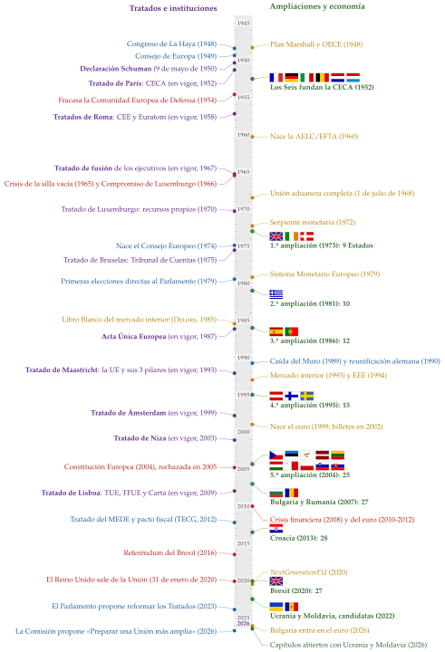
I.1. Antecedentes (1945-1951)
El contexto: una Europa destruida por la Segunda Guerra Mundial, 2 superpotencias que se repartían el continente y unos Estados Unidos que querían una Europa occidental fuerte frente a la Unión Soviética, pero sin tutelarla para siempre.
En lo económico, Estados Unidos impulsó un orden multilateral: el Fondo Monetario Internacional, el Banco Mundial y el GATT [ver tema 3.B.20].
El Plan Marshall (1948)1 condicionó la ayuda a que los europeos cooperaran entre sí y liberalizaran su comercio y sus pagos: para gestionarla nacieron la Organización Europea de Cooperación Económica (OECE, 1948)2 y la Unión Europea de Pagos (1950).
El Congreso de La Haya (1948) reunió a los movimientos europeístas. Había 3 ideas de Europa:
una federación política desde el principio (los federalistas);
una cooperación entre gobiernos, sin ceder soberanía (la posición británica);
una integración funcionalista, por sectores concretos, que fuera creando intereses comunes de hecho (la de Jean Monnet).
Su resultado fue el Consejo de Europa (Tratado de Londres, 1949)3, puramente intergubernamental. Pronto se vio que, para avanzar, el método tenía que ser el funcionalista: objetivos concretos, sobre todo económicos.
¿Por qué se integran los Estados? Las teorías de la integración. La ciencia política ofrece 3 explicaciones, útiles para las preguntas del tribunal:
Neofuncionalismo (Ernst Haas, 1958): la integración de un sector crea presiones para integrar los vecinos (efecto derrame, spillover): el carbón y el acero llevaron al mercado común, el mercado común a la moneda y la moneda a la unión bancaria. Las instituciones supranacionales y los grupos de interés empujan el proceso. Explica bien los años 50 y el relanzamiento de los 80; peor, los frenazos.
Intergubernamentalismo liberal (Andrew Moravcsik, 1998): los gobiernos forman sus preferencias según los intereses económicos de sus países, negocian entre ellos (pesan más los grandes) y delegan en instituciones comunes para que sus compromisos sean creíbles. Explica los grandes tratados como pactos entre Francia, Alemania y el Reino Unido.
Postfuncionalismo (Liesbet Hooghe y Gary Marks, 2009): desde Maastricht, la integración afecta a la identidad y se politiza; el «consenso permisivo» de los ciudadanos se convierte en un «disenso restrictivo» (referendos de 2005, Brexit).
I.2. Origen y expansión (1951-1973)
I.2.1. El Tratado de París (CECA, 1951)
La Declaración Schuman (9 de mayo de 1950, hoy Día de Europa): Robert Schuman, ministro francés de Asuntos Exteriores,4 propuso, con la idea de Jean Monnet, poner la producción de carbón y acero de Francia y Alemania bajo una Alta Autoridad común, abierta a otros países.5
El Tratado de París (18 de abril de 1951; en vigor el 23 de julio de 1952) creó la Comunidad Europea del Carbón y del Acero (CECA) con «los Seis»: Francia, la República Federal de Alemania, Italia, Bélgica, los Países Bajos y Luxemburgo. El Reino Unido no quiso entrar. Se firmó por 50 años y expiró el 23 de julio de 2002.
Lo que aportó:
un objetivo político (la paz) con medios económicos: un mercado común del carbón y del acero, sin aranceles ni cuotas, y con límites a las ayudas públicas;
el primer marco supranacional: una Alta Autoridad independiente de los gobiernos (antecedente de la Comisión), un Consejo de Ministros (lo pidieron los países del Benelux, para equilibrar el poder de la Alta Autoridad), una Asamblea Común (antecedente del Parlamento), un Tribunal de Justicia y un Comité Consultivo.
Un fracaso que marcó el camino: la Comunidad Europea de Defensa, firmada en 1952, murió en 1954 al rechazarla la Asamblea Nacional francesa. La defensa quedó en la OTAN (1949) y la integración siguió por la economía.
I.2.2. Los Tratados de Roma (CEE y Euratom, 1957)
El camino: la Conferencia de Mesina (1955) encargó a Paul-Henri Spaak un informe sobre una unión económica general y otra en la energía nuclear; se aprobó en Venecia en 1956. El Reino Unido volvió a quedarse fuera y prefirió una zona de libre comercio.6
Los Tratados de Roma (25 de marzo de 1957; en vigor el 1 de enero de 1958) crearon la Comunidad Económica Europea (CEE) y la Comunidad Europea de la Energía Atómica (Euratom).
Lo que aportó el Tratado CEE, una integración ya general (de toda la economía) y no sectorial:
objetivos por etapas: una unión aduanera en 12 años (se completó el 1 de julio de 1968, antes de plazo), un mercado común con libre circulación de mercancías, personas, servicios y capitales, y la aproximación de las políticas económicas [ver tema 3.B.10];
4 políticas comunes: agrícola, comercial, de transportes y de competencia. La comercial y la agrícola cobraron fuerza enseguida; la de transportes y la de competencia, apenas hasta los años 80;7
el Fondo Social Europeo y el Banco Europeo de Inversiones [ver tema 3.B.30];
la mayoría cualificada en el Consejo para muchas decisiones, aunque en la práctica se decidió casi todo por unanimidad.
El Tratado de fusión (Bruselas, 8 de abril de 1965; en vigor el 1 de julio de 1967) unió los ejecutivos de las 3 Comunidades en una sola Comisión y un solo Consejo (la Asamblea y el Tribunal ya eran comunes desde 1958): desde entonces se habla de las Comunidades Europeas.
I.2.3. La expansión de los años 60 y la primera ampliación
Un círculo virtuoso: el crecimiento facilitó la unión aduanera y la unión aduanera reforzó el crecimiento. La Política Agrícola Común se diseñó en la Conferencia de Stresa (1958) [ver tema 3.B.38].
La crisis de la silla vacía (1965): Francia dejó de acudir al Consejo durante 6 meses para no aceptar el paso a la mayoría cualificada. Se cerró con el Compromiso de Luxemburgo (1966): cuando estuvieran en juego «intereses muy importantes» de un Estado, el Consejo buscaría el acuerdo de todos. En la práctica, hasta mediados de los 80 se decidió casi siempre por unanimidad.
La primera ampliación (1 de enero de 1973): el Reino Unido, Irlanda y Dinamarca. Noruega negoció su entrada, pero la rechazó en referéndum (53 % de noes en 1972 y de nuevo en 1994). España pidió en 1962 una asociación, pero, sin democracia, solo obtuvo un Acuerdo Preferencial (1970) [ver tema 4.A.27].
I.3. Crisis (1973-1985)
El primer intento de unión monetaria: el Informe Werner (1970) propuso una unión económica y monetaria en 10 años. El fin de la convertibilidad del dólar (agosto de 1971) y la crisis del petróleo (1973) lo enterraron; quedó la serpiente monetaria (1972), con márgenes de \(\pm2{,}25~\%\), que se deshizo en pocos años, y después el Sistema Monetario Europeo (1979) [ver tema 3.B.43].
«Euroesclerosis»: con las crisis del petróleo, los Estados levantaron barreras no arancelarias que fragmentaron el mercado, y la Comunidad perdió terreno frente a Estados Unidos y Japón en productividad y empleo.
Pero hubo avances institucionales:
los recursos propios (Decisión de 1970 y Tratado de Luxemburgo): los derechos de aduana, los agrícolas y, desde 1979, un porcentaje del IVA sustituyeron a las contribuciones de los Estados [ver tema 3.B.37];
el Consejo Europeo (cumbre de París de 1974; primera reunión en Dublín, 1975), que reúne a los jefes de Estado o de Gobierno;
el Fondo Europeo de Desarrollo Regional (FEDER, 1975) [ver tema 3.B.40];
el Tribunal de Cuentas (Tratado de Bruselas de 1975; empezó a funcionar en 1977);
las primeras elecciones directas al Parlamento Europeo (1979).
La ampliación al Sur: Grecia (1981), y España y Portugal (1 de enero de 1986, con los tratados de adhesión firmados el 12 de junio de 1985), que buscaban asentar sus democracias y modernizar sus economías [ver tema 4.A.27].
I.4. Relanzamiento (1985-1990)
El Libro Blanco (1985): con Jacques Delors al frente de la Comisión, se listaron unas 280 medidas para eliminar las barreras físicas, técnicas y fiscales y completar el mercado interior el 31 de diciembre de 1992 [ver tema 3.B.39].
El Acta Única Europea (firmada en febrero de 1986; en vigor el 1 de julio de 1987), la primera gran reforma de los Tratados:
fijó el objetivo del mercado interior y, para lograrlo, extendió la mayoría cualificada a la armonización de legislaciones;
añadió competencias: medio ambiente, investigación, cohesión económica y social, y política social;
reforzó al Parlamento con el procedimiento de cooperación y el dictamen conforme para las adhesiones;
dio base jurídica al Consejo Europeo y a la cooperación en política exterior.
Otros avances de esos años, que muestran que el relanzamiento no fue solo el mercado:
el Acuerdo de Schengen (1985), firmado por 5 Estados fuera del marco comunitario para suprimir los controles en sus fronteras comunes;
el primer paquete Delors (1988), que reformó la financiación de la Comunidad, contuvo el gasto agrícola y duplicó los fondos estructurales para compensar a las regiones menos desarrolladas por la apertura del mercado [ver tema 3.B.37] [ver tema 3.B.40];
el programa Erasmus (1987) de movilidad de estudiantes.
Lo siguiente fue la moneda: el Informe Delors (1989) diseñó la unión económica y monetaria en 3 etapas, y la caída del Muro y la reunificación alemana (1990) aceleraron la unión política. Se convocaron 2 conferencias intergubernamentales, una para cada unión, que acabaron en Maastricht.
I.5. De la Comunidad a la Unión Europea (1990-2007)
I.5.1. El Tratado de Maastricht (1992)
El Tratado de la Unión Europea (firmado el 7 de febrero de 1992; en vigor el 1 de noviembre de 1993) creó la Unión Europea, aunque sin personalidad jurídica, sobre 3 pilares (figura 2):
I. Las Comunidades Europeas: la CEE pasó a llamarse Comunidad Europea (CE), con la CECA y Euratom. Es el pilar supranacional (método comunitario).
II. La Política Exterior y de Seguridad Común (PESC), intergubernamental.
III. La cooperación en Justicia y Asuntos de Interior (JAI), también intergubernamental.
Lo que aportó:
la unión económica y monetaria, con sus etapas, los criterios de convergencia y un Banco Central Europeo independiente [ver tema 3.B.43];
la ciudadanía de la Unión, que se suma a la nacional: libre circulación y residencia, voto en las elecciones municipales y europeas donde se reside, protección diplomática de otro Estado y petición al Parlamento y al nuevo Defensor del Pueblo Europeo;
el procedimiento de codecisión entre el Parlamento y el Consejo, más mayoría cualificada, el principio de subsidiariedad en el Tratado, el Fondo de Cohesión y el Comité de las Regiones;
el Tribunal de Cuentas pasó a ser institución.
Su ratificación fue difícil: Dinamarca lo rechazó en un primer referéndum (1992) y lo aprobó en 1993 con excepciones; en Francia, el sí ganó por poco. Fue el fin del «consenso permisivo».
La cuarta ampliación (1995): Austria, Finlandia y Suecia. Antes, en 1994, entró en vigor el Espacio Económico Europeo (EEE), que extiende el mercado interior a Islandia, Liechtenstein y Noruega, sin la PAC ni la unión aduanera; Suiza lo rechazó en referéndum y se relaciona con la Unión por acuerdos bilaterales [ver tema 3.B.35].
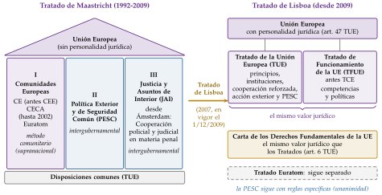
Fuente: elaboración propia a partir del TUE y del TFUE y de Baldwin y Wyplosz (2020).
I.5.2. Los Tratados de Ámsterdam (1997) y Niza (2001)
Ámsterdam (firmado en octubre de 1997; en vigor el 1 de mayo de 1999) acercó la Unión a los ciudadanos, pero no hizo la reforma institucional que exigía la ampliación al Este:
incorporó el acervo de Schengen (el acuerdo de 1985 y su convenio de 1990, que suprimen los controles en las fronteras interiores) y pasó al pilar comunitario el asilo, los visados y la inmigración;
creó la Estrategia Europea de Empleo y el cargo de Alto Representante para la PESC;
extendió la codecisión y la mayoría cualificada;
introdujo la cooperación reforzada: un grupo de Estados puede avanzar sin los demás dentro del marco de la Unión (II.3.4).8
Niza (firmado en febrero de 2001; en vigor el 1 de febrero de 2003) hizo los cambios mínimos para la gran ampliación:
reponderó los votos en el Consejo con una triple mayoría (votos ponderados, mayoría de Estados y, a petición, el 62 % de la población);
limitó la Comisión a un comisario por Estado (los grandes perdieron el segundo) y reforzó a su presidente;
repartió de nuevo los escaños del Parlamento y facilitó la cooperación reforzada (bastaban 8 Estados).
La quinta ampliación (1 de mayo de 2004), la mayor de todas: Chipre, Eslovaquia, Eslovenia, Estonia, Hungría, Letonia, Lituania, Malta, Polonia y la República Checa (de 15 a 25). Bulgaria y Rumanía entraron el 1 de enero de 2007 (gráfico 1).
I.5.3. La Constitución Europea que no fue (2004)
La Declaración de Laeken (2001) convocó una Convención sobre el futuro de Europa, presidida por Valéry Giscard d’Estaing, que redactó un Tratado por el que se establece una Constitución para Europa, firmado en Roma en octubre de 2004. Sustituía todos los Tratados por un texto único, con personalidad jurídica para la Unión, la doble mayoría en el Consejo y la Carta de Derechos Fundamentales vinculante.
Fracasó en 2005: Francia (55 % de noes) y los Países Bajos (62 %) lo rechazaron en referéndum, cuando ya lo habían ratificado más de la mitad de los Estados. Pesaron los símbolos de Estado (el nombre de Constitución, la bandera, el himno) y el malestar con la ampliación y la globalización.
I.6. Base actual: Lisboa, Brexit, crisis y ampliación
I.6.1. El Tratado de Lisboa (2007)
Tras un «periodo de reflexión», la presidencia alemana de 2007 rescató el contenido de la Constitución sin sus símbolos. El Tratado de Lisboa se firmó el 13 de diciembre de 2007 y entró en vigor el 1 de diciembre de 2009, después de que Irlanda, el único país que lo sometió a referéndum, lo rechazara en 2008 y lo aprobara en 2009 con garantías.
No es un texto nuevo, sino una reforma de los Tratados existentes, que quedan así (figura 2):
el Tratado de la Unión Europea (TUE): valores, principios, instituciones, cooperación reforzada, acción exterior y PESC;
el Tratado de Funcionamiento de la Unión Europea (TFUE), el antiguo Tratado CE: las competencias, las políticas y el funcionamiento de las instituciones;
la Carta de los Derechos Fundamentales de la Unión Europea, proclamada en Niza en 2000, con el mismo valor jurídico que los Tratados (art. 6 TUE);9
el Tratado Euratom, que sigue separado.
Lo que aportó:
personalidad jurídica única para la Unión (art. 47 TUE) y el fin de los pilares; la PESC conserva reglas propias;
un reparto de competencias claro (exclusivas, compartidas y de apoyo) y un papel para los Parlamentos nacionales en el control de la subsidiariedad (II.2);
el procedimiento legislativo ordinario (la antigua codecisión) como regla general, lo que pone al Parlamento a la par del Consejo;
la doble mayoría en el Consejo desde 2014 (III.3);
el Consejo Europeo y el BCE como instituciones, un presidente estable del Consejo Europeo y un Alto Representante que es también vicepresidente de la Comisión, con un Servicio Europeo de Acción Exterior;
la iniciativa ciudadana europea y, por primera vez, una cláusula de retirada (art. 50 TUE).
La séptima ampliación: Croacia, el 1 de julio de 2013 (28 Estados).
I.6.2. La retirada del Reino Unido (Brexit)
El artículo 50 TUE permite a un Estado retirarse «de conformidad con sus normas constitucionales»: lo notifica al Consejo Europeo, la Unión negocia un acuerdo de retirada (lo celebra el Consejo por mayoría cualificada, con la aprobación del Parlamento) y, si no hay acuerdo, los Tratados dejan de aplicarse a los 2 años, salvo prórroga por unanimidad.
El caso británico:
en el referéndum del 23 de junio de 2016, el 51,9 % votó salir;
el Reino Unido notificó la retirada el 29 de marzo de 2017; tras 3 prórrogas, salió el 31 de enero de 2020 con un Acuerdo de Retirada (derechos de los ciudadanos, liquidación financiera y el Protocolo sobre Irlanda del Norte);
tras un periodo transitorio hasta el 31 de diciembre de 2020, la relación se rige por el Acuerdo de Comercio y Cooperación (en vigor desde 2021), una zona de libre comercio sin aranceles ni cuotas, pero con controles aduaneros. El Marco de Windsor (2023) ajustó el régimen de Irlanda del Norte, y la cumbre de mayo de 2025 abrió una agenda de acercamiento [ver tema 3.B.41] [ver tema 3.B.42].
La lección: salir es posible, pero caro, y nadie ha querido seguir el ejemplo.
I.6.3. Las respuestas a las crisis (2010-2026)
Desde Lisboa no ha habido otra gran reforma de los Tratados, pero la Unión ha cambiado mucho: cada crisis se ha resuelto con instrumentos nuevos, a veces fuera de los Tratados y casi siempre con el Consejo Europeo al mando. Se cumplió lo que había escrito Jean Monnet: «Europa se hará en las crisis y será la suma de las soluciones que se den a esas crisis». Son 4 respuestas:
La crisis del euro (2010-2012): fondos de rescate temporales (2010) y después el Mecanismo Europeo de Estabilidad (2012), con una reforma limitada del art. 136 TFUE (2011) para darle base; más disciplina fiscal (six-pack, 2011; Tratado de Estabilidad, 2012; two-pack, 2013), y la unión bancaria, con el supervisor único en el BCE (2014) y la resolución única (2016) [ver tema 3.B.44] [ver tema 3.B.45].
La pandemia (2020): la cláusula general de escape de las reglas fiscales y NextGenerationEU, el primer gran endeudamiento común de la Unión (750.000 millones de euros a precios de 2018), que se devolverá con el presupuesto hasta 2058 [ver tema 3.B.37].
La guerra de Ucrania (desde 2022): paquetes sucesivos de sanciones a Rusia, decididos por unanimidad en la PESC; el Mecanismo para Ucrania (50.000 millones de euros para 2024-2027), y la concesión del estatuto de candidato a Ucrania y Moldavia.
La seguridad y la defensa (desde 2024): el primer comisario de Defensa y préstamos comunes para comprar armamento (el instrumento SAFE, 150.000 millones de euros, 2025), apoyados en el art. 122 TFUE y no en una reforma de los Tratados.
El patrón: la Unión estira los Tratados (art. 122, cláusulas de flexibilidad, acuerdos intergubernamentales) en lugar de reformarlos. Es eficaz, pero difumina el control democrático y alimenta el debate de la reforma.
I.6.4. Ampliación y reforma de los Tratados: situación en 2026
Cómo se entra (art. 49 TUE): el Estado europeo que respete los valores del art. 2 lo pide; el Consejo decide por unanimidad, tras consultar a la Comisión y con la aprobación del Parlamento, y el tratado de adhesión lo ratifican todos los Estados. Las condiciones son los criterios de Copenhague (1993): instituciones democráticas y Estado de Derecho, una economía de mercado capaz de competir en la Unión y la capacidad de asumir el acervo; a ellos se suma la capacidad de la Unión para absorber nuevos miembros.
La situación en noviembre de 2026 (gráfico 1):
hay 9 candidatos (Albania, Bosnia y Herzegovina, Georgia, Macedonia del Norte, Moldavia, Montenegro, Serbia, Turquía y Ucrania) y un candidato potencial (Kosovo);
Montenegro va en cabeza: en octubre de 2026 tenía cerrados provisionalmente 21 de los 33 capítulos y aspira a cerrarlos todos a finales de 2026; le sigue Albania;
Ucrania y Moldavia, candidatas desde 2022, abrieron en junio de 2026 el primer bloque de capítulos (los fundamentales), cuando Hungría levantó su veto tras el cambio de gobierno de abril, y en octubre los de mercado interior y competitividad;
Turquía y Georgia tienen las negociaciones congeladas por el retroceso democrático.
El debate de la reforma: una Unión de 30 a 35 Estados no funcionaría con la unanimidad y con un comisario por Estado. Hay 3 vías:
Reformar los Tratados (art. 48 TUE): el Parlamento Europeo propuso el 22 de noviembre de 2023 una reforma amplia (más mayoría cualificada, también en la PESC y en fiscalidad; una Comisión más pequeña, rebautizada «Ejecutivo»; iniciativa legislativa para el Parlamento; más competencias en salud, energía o defensa). El Consejo Europeo no ha convocado la convención que exigiría.
Usar lo que ya permiten los Tratados: la Comisión propuso el 6 de octubre de 2026 («Preparar una Unión más amplia») usar las cláusulas pasarela para votar por mayoría cualificada las sanciones, la lucha contra el fraude fiscal y la fiscalidad de la energía, recurrir más a la cooperación reforzada y añadir a los futuros tratados de adhesión salvaguardias temporales (hasta la suspensión del voto) para quien vulnere los valores, todo ello sin reformar los Tratados.
Integración gradual: dejar participar a los candidatos en partes del mercado interior y de los programas antes de la adhesión.
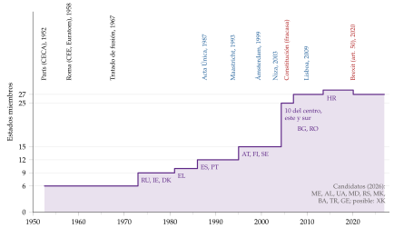
Fuente: elaboración propia a partir de los tratados de adhesión y de retirada (EUR-Lex) y del Consejo de la UE. Códigos ISO de los países (EL, Grecia).
Recapitulación: en 70 años, la Unión ha pasado de 6 a 27 Estados y del carbón y el acero a casi todo. Cada tratado añadió competencias, mayorías y poder al Parlamento. Con este edificio delante, veamos su Derecho, que es lo que hace a la Unión distinta de cualquier otra organización.
II. El ordenamiento jurídico de la Unión Europea
Pasamos del edificio a sus reglas: qué Derecho tiene la Unión, qué competencias ejerce y cómo legisla.
Conclusión anticipada: el Derecho de la Unión es un ordenamiento propio que prima sobre el nacional y que los ciudadanos pueden invocar ante sus jueces; no lo dicen los Tratados, sino el Tribunal de Justicia. La Unión solo actúa donde se le atribuyen competencias y, salvo en las exclusivas, solo si lo hace mejor que los Estados: la subsidiariedad es, en el fondo, una regla económica de asignación.
II.1. Bases del ordenamiento jurídico
II.1.1. Características: autonomía, primacía y efecto directo
La Unión es una comunidad de Derecho: es una creación del Derecho (los Tratados) y persigue sus objetivos con el Derecho (los actos de sus instituciones). Su ordenamiento tiene 5 rasgos:
Autonomía: es un ordenamiento propio, distinto del Derecho internacional y del de los Estados, porque estos le han transferido el ejercicio de competencias. Solo el Tribunal de Justicia lo interpreta en última instancia (art. 344 TFUE).
Efecto directo: crea derechos y obligaciones para los particulares, que pueden invocarlos ante sus jueces, frente al Estado (efecto vertical) y, a veces, frente a otros particulares (efecto horizontal). Lo estableció la sentencia Van Gend en Loos (1963): la Comunidad es «un nuevo ordenamiento jurídico de Derecho internacional» cuyos sujetos son también los nacionales.
Primacía: en caso de conflicto, la norma de la Unión prevalece sobre la nacional, sea anterior o posterior y de cualquier rango, incluida la constitucional. Lo estableció Costa contra ENEL (1964): si cada Estado pudiera dejar sin efecto el Derecho común con una ley posterior, ese Derecho no sería común. La norma nacional contraria no es nula: el juez nacional debe dejarla sin aplicar, sin esperar a que la deroguen (Simmenthal, 1978).10
Unidad: el acervo (acquis) es el conjunto de normas, sentencias y compromisos de la Unión; quien entra lo asume entero.
Complejidad: las fuentes son muchas y de naturaleza distinta (II.1.2).
La responsabilidad del Estado: un Estado que incumple el Derecho de la Unión (por ejemplo, porque no transpone una directiva) debe indemnizar a los particulares perjudicados si la norma les confería derechos, la violación es suficientemente caracterizada y hay relación de causalidad (Francovich, 1991; Brasserie du Pêcheur y Factortame, 1996).
La jurisprudencia que construyó el ordenamiento. Los Tratados no dicen que el Derecho de la Unión prime ni que tenga efecto directo: lo fue estableciendo el Tribunal de Justicia, sentencia a sentencia, casi siempre al responder cuestiones prejudiciales de jueces nacionales (tabla 1).
| Sentencia | Año | Qué estableció |
|---|---|---|
| Van Gend en Loos (26/62) | 1963 | Efecto directo de los Tratados: los particulares pueden invocarlos ante el juez nacional |
| Costa contra ENEL (6/64) | 1964 | Primacía sobre las leyes nacionales, también las posteriores |
| Internationale Handelsgesellschaft (11/70) | 1970 | Primacía también sobre las constituciones nacionales; los derechos fundamentales, como principios generales |
| AETR (22/70) | 1971 | Competencias exteriores implícitas: donde hay normas comunes internas, la Comunidad negocia fuera |
| Van Duyn (41/74) | 1974 | Efecto directo de las directivas claras, precisas e incondicionales |
| Simmenthal (106/77) | 1978 | El juez nacional inaplica por sí mismo la norma nacional contraria |
| Cassis de Dijon (120/78) | 1979 | Reconocimiento mutuo en el mercado interior [ver tema 3.B.39] |
| Les Verts (294/83) | 1986 | El Tratado es la «carta constitucional» de una comunidad de Derecho |
| Marshall (152/84) | 1986 | Las directivas no tienen efecto directo horizontal (entre particulares) |
| Marleasing (C-106/89) | 1990 | Interpretación conforme: el juez interpreta el Derecho nacional a la luz de la directiva |
| Francovich (C-6/90 y C-9/90) | 1991 | Responsabilidad del Estado por incumplir el Derecho de la Unión |
| Kadi (C-402/05 P) | 2008 | Los actos que aplican sanciones de la ONU respetan los derechos fundamentales de la Unión |
Fuente: elaboración propia a partir de Borchardt (2017) y Mangas Martín y Liñán Nogueras (2016).
La primacía, discutida por los tribunales constitucionales. Algunos tribunales nacionales aceptan la primacía, pero se reservan controlar que la Unión no se exceda de sus competencias (ultra vires) ni toque la identidad constitucional (art. 4.2 TUE).
Alemania: el 5 de mayo de 2020, el Tribunal Constitucional federal declaró ultra vires el programa de compras de deuda pública del BCE (PSPP), que el Tribunal de Justicia había avalado en la sentencia Weiss (2018), y dio 3 meses al BCE para justificar su proporcionalidad. El BCE explicó su análisis a través del Bundesbank y la Comisión abrió un procedimiento de infracción contra Alemania (junio de 2021), que cerró en diciembre al comprometerse el Gobierno a respetar la primacía [ver tema 3.B.43].
Polonia: en octubre de 2021, su Tribunal Constitucional declaró contrarios a la Constitución varios artículos del TUE tal como los interpreta el Tribunal de Justicia. La Comisión llevó a Polonia ante el Tribunal de Justicia en 2023.
Los valores de la Unión y su defensa
Los valores (art. 2 TUE): dignidad humana, libertad, democracia, igualdad, Estado de Derecho y derechos humanos.
El artículo 7 TUE los protege en 2 fases:
prevención: el Consejo, por 4/5 de sus miembros y con la aprobación del Parlamento, constata un riesgo claro de violación grave;
sanción: el Consejo Europeo, por unanimidad (sin el Estado afectado), constata una violación grave y persistente, y el Consejo puede suspender derechos, incluido el de voto, por mayoría cualificada.
Su uso: la Comisión activó la primera fase contra Polonia (2017; la retiró en 2024) y el Parlamento contra Hungría (2018); la unanimidad de la segunda fase la hace casi inaplicable.
Por eso se buscaron vías presupuestarias: el régimen de condicionalidad (Reglamento 2020/2092) permite suspender fondos si las vulneraciones del Estado de Derecho afectan al presupuesto. El Tribunal de Justicia lo avaló en febrero de 2022 y se aplicó a Hungría en diciembre de 2022 [ver tema 3.B.37].
II.1.2. Fuentes y jerarquía del Derecho de la Unión
Las fuentes del Derecho de la Unión se ordenan en una jerarquía: cada norma solo es válida si respeta las de rango superior, y el Tribunal de Justicia puede anular la que no lo haga (recurso de anulación) o declararla inválida (cuestión prejudicial). De mayor a menor rango, son 4 (tabla 2):
Derecho originario, el que crean los Estados como «señores de los Tratados»: los tratados constitutivos (hoy, el TUE, el TFUE y el Tratado Euratom, con la Carta, que tiene su mismo valor, y sus protocolos y anexos) y los tratados modificativos y complementarios (del Tratado de fusión a Lisboa, y los de adhesión). Se reforma por unanimidad y con ratificación de todos los Estados (art. 48 TUE).
Principios generales del Derecho, que el Tribunal deduce de las tradiciones constitucionales comunes y del Convenio Europeo de Derechos Humanos: proporcionalidad, seguridad jurídica y confianza legítima, igualdad y no discriminación, derecho de defensa. Tienen rango de Derecho originario: por ellos entraron los derechos fundamentales en el ordenamiento antes de que existiera la Carta.
Acuerdos internacionales que celebra la Unión (arts. 216 a 218 TFUE): vinculan a las instituciones y a los Estados, están por debajo de los Tratados y por encima del Derecho derivado. Si la materia es de competencia exclusiva, los celebra solo la Unión (un acuerdo comercial puro); si es compartida, son mixtos y los ratifican también los Estados (II.3.3) [ver tema 3.B.41].
Derecho derivado: los actos de las instituciones (II.1.3), que desarrollan los Tratados y están subordinados a ellos. Dentro de él, los actos legislativos están por encima de los delegados y de ejecución que los desarrollan.
La jurisprudencia no es formalmente una fuente, pero la interpretación del Tribunal de Justicia vincula a todos los jueces y, como se ha visto, construyó los principios básicos del sistema.
Al margen de la jerarquía quedan los convenios entre Estados miembros sobre materias ligadas a la Unión pero fuera de sus competencias o de sus procedimientos, como el Tratado de Estabilidad, Coordinación y Gobernanza (2012) o el Tratado del Mecanismo Europeo de Estabilidad [ver tema 3.B.45]: son Derecho internacional entre los Estados, aunque usan las instituciones de la Unión.
| Fuente | Qué comprende | |
|---|---|---|
| 1. Derecho originario (lo crean los Estados; rango supremo) |
Tratados constitutivos: TFUE, antiguo Tratado CEE (Roma, 25/3/1957) Tratado Euratom (Roma, 25/3/1957) TUE (Maastricht, 7/2/1992) Carta de los Derechos Fundamentales (2000; vinculante desde 2009) Sus protocolos y anexos |
Tratados modificativos y complementarios: Tratado de fusión (Bruselas, 8/4/1965) Tratados presupuestarios (Luxemburgo, 22/4/1970; Bruselas, 22/7/1975) Acta Única Europea (17 y 28/2/1986) Ámsterdam (2/10/1997), Niza (26/2/2001) y Lisboa (13/12/2007) Tratados de adhesión y decisiones de reforma simplificada (art. 48.6 TUE) |
| 2. Principios generales (rango de originario) |
Los deduce el Tribunal de Justicia de las tradiciones constitucionales comunes y del Convenio Europeo de Derechos Humanos: proporcionalidad, seguridad jurídica, confianza legítima, igualdad y no discriminación, derecho de defensa, derechos fundamentales | |
| 3. Acuerdos internacionales de la UE (arts. 216-218 TFUE) |
Por debajo de los Tratados y por encima del Derecho derivado; obligan a las instituciones y a los Estados. Solo de la Unión en sus competencias exclusivas (un acuerdo comercial puro); mixtos, firmados también por los Estados, en las compartidas (un acuerdo con protección de inversiones o disposiciones sobre justicia, energía o asuntos sociales) | |
| 4. Derecho derivado (art. 288 TFUE) |
Vinculante: reglamentos (alcance general, directamente aplicables), directivas (obligan al resultado; hay que transponerlas) y decisiones (obligan a sus destinatarios) No vinculante: recomendaciones y dictámenes Por rango: actos legislativos (arts. 289 y 294), y por debajo, actos delegados (art. 290) y de ejecución (art. 291) |
|
| Al margen: convenios entre Estados miembros | Derecho internacional entre los Estados en materias ligadas a la Unión: el Tratado de Estabilidad, Coordinación y Gobernanza (2012), el Tratado del MEDE (2012), el Acuerdo sobre un Tribunal Unificado de Patentes (2013) o el Acuerdo intergubernamental sobre el Fondo Único de Resolución (2014) | |
Fuente: elaboración propia a partir de los Tratados, de Borchardt (2017) y de Mangas Martín y Liñán Nogueras (2016).
II.1.3. El Derecho derivado
Los actos jurídicos (art. 288 TFUE) son 5: 3 vinculantes y 2 no vinculantes (tabla 3).
Reglamento: de alcance general, obligatorio en todos sus elementos y directamente aplicable en todos los Estados, sin necesidad de norma nacional. Es el instrumento de la unificación y lo más parecido a una ley. Entra en vigor en la fecha que fija o, si no fija ninguna, a los 20 días de su publicación en el Diario Oficial.
Directiva: obliga a los Estados destinatarios en cuanto al resultado, y les deja elegir la forma y los medios; hay que transponerla en el plazo que fija. Es el instrumento de la armonización. No tiene efecto directo por sí misma, pero lo tienen sus disposiciones claras, precisas e incondicionales si el plazo ha vencido sin transposición o con una incorrecta, y solo frente al Estado (efecto vertical).
Decisión: obligatoria en todos sus elementos; si designa destinatarios (un Estado, una empresa), solo los obliga a ellos. La usa, por ejemplo, la Comisión para prohibir una fusión o una ayuda de Estado.
Recomendación y dictamen: no vinculantes. La primera sugiere una conducta; el segundo expresa una opinión.
| Obligatoriedad | Alcance | Aplicabilidad | Efecto directo | |
|---|---|---|---|---|
| Reglamento | En todos sus elementos | General | Directa, sin transposición | Sí, vertical y horizontal |
| Directiva | En cuanto al resultado | Estados destinatarios | Exige transposición | Solo vertical, si es incondicional y el plazo ha vencido |
| Decisión | En todos sus elementos | Sus destinatarios (si los designa) | Directa | Sí, para sus destinatarios |
| Recomendación | No vinculante | — | — | No |
| Dictamen | No vinculante | — | — | No |
Fuente: elaboración propia a partir del art. 288 TFUE y de Borchardt (2017).
Actos legislativos y no legislativos: lo que hace legislativo a un acto no es su forma, sino el procedimiento. Un reglamento, una directiva o una decisión adoptados por un procedimiento legislativo son actos legislativos (art. 289 TFUE); los demás no lo son.
Por debajo de los actos legislativos, la Comisión adopta 2 tipos de actos no legislativos:
Actos delegados (art. 290 TFUE): el legislador delega en la Comisión la facultad de completar o modificar elementos no esenciales de un acto legislativo (por ejemplo, actualizar un anexo técnico). El Parlamento o el Consejo pueden oponerse en un plazo (normalmente 2 meses) o revocar la delegación.
Actos de ejecución (art. 291 TFUE): cuando hacen falta condiciones uniformes para aplicar un acto, la Comisión (o, en casos tasados, el Consejo) adopta las normas de ejecución bajo el control de los Estados, mediante comités de representantes nacionales: es la comitología (Reglamento 182/2011), con 2 procedimientos, el consultivo (el comité opina) y el de examen (un dictamen negativo por mayoría cualificada impide adoptar el acto, que puede ir a un comité de apelación).
Cuánto pesa cada uno: cada año se adoptan entre 55 y 150 actos por el procedimiento legislativo ordinario, con picos al final de cada legislatura, pero más de 1.000 actos de ejecución y unos 150-200 delegados (gráfico 2). Buena parte de las reglas del mercado interior se escriben en ese segundo nivel.
El Derecho indicativo (soft law): comunicaciones, directrices, libros verdes y blancos, códigos de conducta o las recomendaciones específicas por país del Semestre Europeo [ver tema 3.B.45]. No obligan, pero orientan conductas y sirven para interpretar, y son el instrumento del método abierto de coordinación.
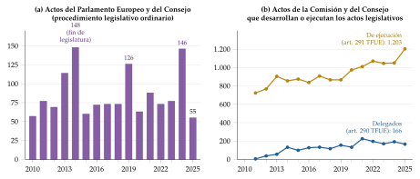
Fuente: elaboración propia a partir de EUR-Lex, estadísticas de actos jurídicos (actos básicos y modificativos por año de adopción). En (a), los picos de 2014, 2019 y 2024 coinciden con el final de cada legislatura. Antes de 2011, EUR-Lex no clasifica los actos de ejecución.
II.1.4. El Derecho de la Unión en el ordenamiento español
Entrar en las Comunidades exigió encajar en la Constitución de 1978 un Derecho que se aplica con preferencia sobre ella. El encaje descansa en 4 piezas, que conviene conocer porque son las que aplica a diario la Administración española:
La cesión del ejercicio de competencias: el art. 93 CE permite autorizar por ley orgánica los tratados que atribuyen a una organización internacional «el ejercicio de competencias derivadas de la Constitución». Con esa base, la Ley Orgánica 10/1985, de 2 de agosto, autorizó la adhesión, y leyes orgánicas posteriores, cada reforma de los Tratados. Garantizar que se cumplen corresponde, según los casos, a las Cortes o al Gobierno.
La primacía, aceptada por el Tribunal Constitucional: en su Declaración 1/1992 exigió reformar el art. 13.2 CE para que los ciudadanos de la Unión pudieran ser elegidos en las municipales, como pedía Maastricht (fue la primera reforma de la Constitución, en agosto de 1992). En la Declaración 1/2004, sobre la Constitución Europea, distinguió la primacía (una regla de aplicación: el Derecho de la Unión se aplica con preferencia) de la supremacía (de validez: la Constitución sigue siendo la norma suprema), con el límite de los valores y principios básicos de la Constitución.
El diálogo con el Tribunal de Justicia: el Tribunal Constitucional planteó su primera cuestión prejudicial en 2011, en el asunto Melloni; el Tribunal de Justicia respondió (C-399/11, 2013) que un Estado no puede exigir un nivel de protección de un derecho fundamental mayor que el de la Carta si con ello pone en peligro la primacía y la eficacia de la orden europea de detención, y el Constitucional ajustó su doctrina (STC 26/2014).
La ejecución interna: transponen y aplican el Derecho de la Unión las Cortes, el Gobierno o las comunidades autónomas, según el reparto interno de competencias; ante la Unión responde siempre el Estado, que puede repercutir las multas a la Administración incumplidora (Real Decreto 515/2013). Las Cortes controlan la subsidiariedad a través de la Comisión Mixta para la Unión Europea (Ley 8/1994, reformada en 2009).
II.2. Competencias y principios
II.2.1. La atribución de competencias (arts. 2 a 6 TFUE)
Lisboa ordenó las competencias en categorías (tabla 4):
Exclusivas (art. 3 TFUE): solo la Unión legisla; los Estados, solo si ella los habilita o para aplicar sus actos.
Compartidas (art. 4): legislan los dos, pero los Estados solo en la medida en que la Unión no lo haya hecho (preempción). En investigación, espacio, cooperación al desarrollo y ayuda humanitaria, la acción de la Unión no impide la de los Estados (competencias paralelas).
De apoyo, coordinación o complemento (art. 6): la Unión apoya a los Estados sin sustituirlos y sin armonizar sus legislaciones.
Y 2 categorías especiales: la coordinación de las políticas económicas y de empleo (art. 5) y la PESC (art. 24 TUE), con reglas propias.
| Tipo | Ámbitos |
|---|---|
| Exclusivas (art. 3) | Unión aduanera; normas de competencia para el mercado interior; política monetaria de la zona del euro; conservación de los recursos biológicos marinos (pesca); política comercial común; y celebrar acuerdos internacionales cuando lo prevea un acto legislativo o afecten a normas comunes |
| Compartidas (art. 4) | Mercado interior; política social (en lo que dice el TFUE); cohesión económica, social y territorial; agricultura y pesca (salvo la conservación); medio ambiente; consumidores; transportes; redes transeuropeas; energía; espacio de libertad, seguridad y justicia; seguridad en salud pública. Paralelas: investigación, desarrollo tecnológico y espacio; cooperación al desarrollo y ayuda humanitaria |
| Coordinación (art. 5) | Políticas económicas (orientaciones generales), de empleo y, si la Unión lo decide, sociales |
| PESC (art. 24 TUE) | Política exterior y de seguridad común, incluida la definición progresiva de una defensa común |
| Apoyo (art. 6) | Salud humana; industria; cultura; turismo; educación, formación, juventud y deporte; protección civil; cooperación administrativa |
Fuente: elaboración propia a partir de los arts. 2 a 6 del TFUE.
La flexibilidad: la cláusula de flexibilidad (art. 352 TFUE) permite actuar, por unanimidad del Consejo y con la aprobación del Parlamento, si hace falta para un objetivo de los Tratados y no hay base jurídica específica; y la jurisprudencia AETR reconoce competencias exteriores implícitas.
II.2.2. Los principios: atribución, subsidiariedad, proporcionalidad y cooperación leal
El art. 5 TUE separa 2 preguntas:
¿Tiene la Unión la competencia? La responde el principio de atribución: la Unión solo actúa dentro de las competencias que le atribuyen los Tratados; las demás son de los Estados.
¿Debe ejercerla, y cómo? La responden 2 principios:
Subsidiariedad: fuera de sus competencias exclusivas, la Unión solo interviene si los objetivos no pueden alcanzarlos de manera suficiente los Estados (en el nivel central, regional o local) y pueden alcanzarse mejor en la Unión, «debido a la dimensión o a los efectos de la acción pretendida».
Proporcionalidad: el contenido y la forma de la acción no exceden de lo necesario para alcanzar los objetivos (mejor una directiva que un reglamento, mejor una recomendación que una directiva, si bastan).
El control de la subsidiariedad (Protocolo 2): los Parlamentos nacionales tienen 8 semanas para emitir dictámenes motivados. Si los dictámenes suman un tercio de sus votos (cada Parlamento tiene 2), la Comisión debe revisar la propuesta (tarjeta amarilla); si suman la mayoría en el procedimiento ordinario, el legislador decide si sigue (tarjeta naranja). Ha habido 3 tarjetas amarillas: el derecho de huelga (2012), la Fiscalía Europea (2013) y el desplazamiento de trabajadores (2016).
La cooperación leal (art. 4.3 TUE): la Unión y los Estados se ayudan mutuamente; los Estados adoptan todas las medidas para cumplir sus obligaciones y se abstienen de poner en peligro los objetivos de la Unión.
El control judicial: los Estados, en nombre de sus Parlamentos, y el Comité de las Regiones pueden recurrir un acto ante el Tribunal de Justicia por vulnerar la subsidiariedad (art. 8 del Protocolo 2). El Tribunal es deferente con el legislador en la subsidiariedad y la proporcionalidad, pero sí controla la atribución: en la sentencia Publicidad del tabaco (Alemania contra Parlamento y Consejo, C-376/98, 2000) anuló una directiva que prohibía casi toda la publicidad del tabaco porque la base jurídica del mercado interior (hoy art. 114) solo ampara los actos que mejoran de verdad su funcionamiento, y no puede usarse para armonizar la salud pública, donde la Unión solo apoya.
La lógica económica de la subsidiariedad: ¿qué quiere decir que un objetivo se alcanza «mejor» en la Unión? El federalismo fiscal responde que centralizar compensa cuando los efectos de la política de un Estado sobre los demás (las externalidades) y las economías de escala pesan más que el coste de imponer a todos la misma política aunque sus preferencias difieran (Oates, 1972, y, para la Unión, Alesina, Angeloni y Etro, 2005). Por eso son exclusivas la política comercial, la aduanera o la monetaria, y siguen siendo nacionales la educación o la sanidad; y por eso cada ampliación, que hace a la Unión más diversa, pide más flexibilidad. El modelo, con su regla de asignación, va en el anexo B.
II.3. Aprobación de la legislación
II.3.1. El procedimiento legislativo ordinario
Es la regla general desde Lisboa (arts. 289 y 294 TFUE): el Parlamento y el Consejo adoptan juntos, en pie de igualdad, un acto propuesto por la Comisión. Se aplica en más de 80 ámbitos y el Consejo vota por mayoría cualificada (figura 3).
La iniciativa es casi un monopolio de la Comisión. Pueden pedirle que proponga el Parlamento (por mayoría de sus miembros, art. 225), el Consejo (art. 241) y un millón de ciudadanos de al menos 7 Estados con una iniciativa ciudadana europea (art. 11.4 TUE), pero la Comisión decide.11
Las lecturas:
1.ª lectura: el Parlamento aprueba su posición, sin plazo; si el Consejo la acepta, el acto queda adoptado; si no, el Consejo adopta su propia posición.
2.ª lectura (3 meses, ampliables a 4, en cada institución): el Parlamento puede aprobar la posición del Consejo, rechazarla por mayoría de sus miembros (el acto decae) o enmendarla; si el Consejo no acepta todas las enmiendas, se convoca el Comité de Conciliación.
Conciliación y 3.ª lectura (6 semanas, ampliables a 8, en cada paso): una delegación del Consejo y otra igual del Parlamento buscan un texto conjunto, que luego aprueban o rechazan las 2 instituciones sin poder enmendarlo.
En la práctica, los trílogos: reuniones informales entre el Parlamento, el Consejo y la Comisión que cierran acuerdos antes de votar. Por eso casi todos los actos se adoptan en primera lectura, y la conciliación es hoy excepcional.
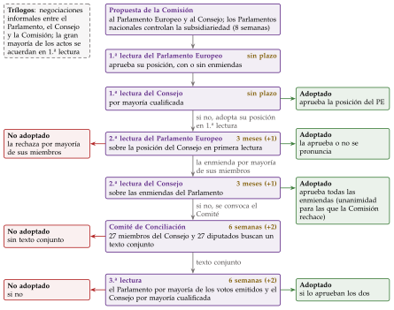
Fuente: elaboración propia a partir del art. 294 del TFUE y de Borchardt (2017).
II.3.2. Los procedimientos legislativos especiales
En los ámbitos que los Tratados reservan a los Estados, el acto lo adopta el Consejo (casi siempre por unanimidad) con una intervención menor del Parlamento:
consulta: el Parlamento da su opinión, que no obliga, pero sin ella el acto es nulo (fiscalidad, art. 113; armonización de legislaciones por la vía del art. 115);
aprobación: el Parlamento acepta o rechaza en bloque, sin enmendar (el marco financiero plurianual, art. 312; la cláusula de flexibilidad, art. 352; las adhesiones y los acuerdos internacionales, aunque estos no sean actos legislativos).
En pocos casos lo adopta el Parlamento con la aprobación del Consejo (el estatuto de los diputados o del Defensor del Pueblo).
El presupuesto anual tiene su procedimiento propio (art. 314 TFUE): la Comisión presenta el proyecto, el Consejo y el Parlamento lo leen una vez cada uno y, si discrepan, un Comité de Conciliación tiene 21 días; el Parlamento tiene la última palabra en algunos supuestos [ver tema 3.B.37].
II.3.3. La celebración de acuerdos internacionales
Para la política comercial, el procedimiento que más importa no es legislativo: es el de los acuerdos internacionales (art. 218 TFUE y, para los comerciales, art. 207). Como cada paso lo controla una institución distinta, se sigue en orden:
Autorización: a recomendación de la Comisión (o de la Alta Representante, en la PESC), el Consejo autoriza abrir las negociaciones, aprueba unas directrices de negociación y designa al negociador.
Negociación: la Comisión negocia en consulta con un comité especial del Consejo (en comercio, el Comité de Política Comercial) e informa al Parlamento en todas las fases (art. 218.10).
Firma y celebración: el Consejo decide firmar y, después, celebrar el acuerdo, con la aprobación del Parlamento si es comercial, de asociación, crea un marco institucional, tiene implicaciones presupuestarias importantes o toca ámbitos del procedimiento legislativo ordinario; en los demás, tras consultarlo.
Las mayorías: el Consejo decide por mayoría cualificada, salvo que el acuerdo abarque un ámbito en el que se exige unanimidad para los actos internos, sea de asociación o, en comercio, toque los servicios culturales y audiovisuales, sociales, educativos o sanitarios en los casos del art. 207.4.
¿Solo la Unión o también los Estados? En el Dictamen 2/15 (2017), sobre el acuerdo con Singapur, el Tribunal de Justicia dijo que casi todo un acuerdo de libre comercio de nueva generación es competencia exclusiva de la Unión, pero no la protección de las inversiones de cartera ni el arbitraje entre inversores y Estados, que son compartidos. Desde entonces, la Unión separa un acuerdo comercial, que celebra sola, de un acuerdo de protección de inversiones, que es mixto (así se hizo con Singapur y Vietnam). Los acuerdos mixtos, como el CETA con Canadá (en aplicación provisional desde 2017 en la parte que es competencia de la Unión), necesitan además la ratificación de todos los Estados; el Tribunal avaló su sistema de tribunales de inversiones en el Dictamen 1/17 (2019) [ver tema 3.B.41].
El control previo: un Estado, el Parlamento, el Consejo o la Comisión pueden pedir al Tribunal de Justicia un dictamen sobre la compatibilidad de un acuerdo con los Tratados; si es negativo, el acuerdo no puede entrar en vigor sin modificarlo o sin reformar los Tratados (art. 218.11), como ocurrió con la adhesión al Convenio Europeo de Derechos Humanos (Dictamen 2/13, 2014).
II.3.4. La flexibilidad: cooperación reforzada y cláusulas pasarela
La cooperación reforzada (art. 20 TUE y arts. 326-334 TFUE): si la Unión en su conjunto no puede alcanzar un objetivo en un plazo razonable, al menos 9 Estados pueden avanzar solos dentro de sus instituciones, como último recurso, abierta a los demás y con la autorización del Consejo por mayoría cualificada (por unanimidad en la PESC). Se ha usado para la ley aplicable al divorcio (2010), la patente unitaria (2012; el Tribunal Unificado de Patentes funciona desde 2023), los regímenes económicos matrimoniales (2016) y la Fiscalía Europea (2017).
La cooperación estructurada permanente (CEP o PESCO, 2017), en defensa, con 26 Estados (todos menos Malta).
Las cláusulas pasarela: la general (art. 48.7 TUE) permite al Consejo Europeo, por unanimidad, pasar un ámbito de la unanimidad a la mayoría cualificada, o de un procedimiento especial al ordinario, si ningún Parlamento nacional se opone en 6 meses; hay también pasarelas específicas (marco financiero, art. 312.2; política social, art. 153.2; medio ambiente, art. 192.2). Nunca se ha usado la general.
El resultado es una Europa de geometría variable: no todos los Estados están en todo (figura 4).
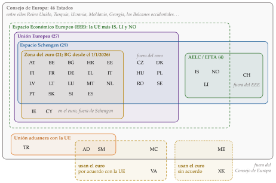
Fuente: elaboración propia a partir de la Unión Europea, el Consejo de Europa y la AELC. Banderas simplificadas, dibujadas para este tema.
Recapitulación: la Unión tiene un Derecho propio, que prima y se aplica directamente, dentro de las competencias que le dan los Tratados y con la subsidiariedad como regla de reparto. Ese Derecho lo hacen unas instituciones concretas, que reparten el poder entre Estados, ciudadanos e interés común: es lo que estudiamos a continuación.
III. Las instituciones de la Unión Europea
Terminamos con quién decide. El art. 13 TUE enumera 7 instituciones: el Parlamento Europeo, el Consejo Europeo, el Consejo, la Comisión Europea, el Tribunal de Justicia de la Unión Europea, el Banco Central Europeo y el Tribunal de Cuentas. Las completan órganos consultivos, el BEI y varios organismos y agencias.12
Conclusión anticipada: no hay una correspondencia simple con la división de poderes de Montesquieu. El poder legislativo lo comparten el Parlamento (los ciudadanos) y el Consejo (los Estados), con la iniciativa de la Comisión (el interés común); el ejecutivo se reparte entre la Comisión y el Consejo, y el judicial, entre el Tribunal de Justicia y los jueces nacionales. El resultado es un equilibrio institucional entre lo supranacional y lo intergubernamental (figura 5).
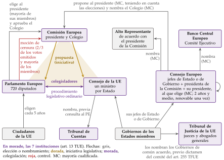
Fuente: elaboración propia a partir del TUE y del TFUE.
III.1. La Comisión Europea
Qué es (art. 17 TUE): la institución que promueve el interés general de la Unión, con independencia de los gobiernos. Es el motor de la integración y la guardiana de los Tratados. Tiene su sede en Bruselas.13
Composición: un Colegio de 27 miembros, uno por Estado, con un mandato de 5 años.14
el presidente lo propone el Consejo Europeo por mayoría cualificada, «teniendo en cuenta» las elecciones al Parlamento, y lo elige el Parlamento por mayoría de sus miembros. Para dar contenido a esa cláusula, los partidos europeos presentan candidatos a presidir la Comisión (los Spitzenkandidaten): funcionó en 2014 (Jean-Claude Juncker), no en 2019, cuando el Consejo Europeo propuso a Ursula von der Leyen, que no había sido candidata, y de nuevo en 2024, cuando ella encabezó la lista del Partido Popular Europeo;
los demás comisarios los propone el Consejo de común acuerdo con el presidente electo, a partir de las propuestas de los Estados; el Parlamento examina a cada uno en audiencias y vota al Colegio entero, que nombra el Consejo Europeo por mayoría cualificada;
el Colegio actual, el segundo de Ursula von der Leyen (reelegida en julio de 2024 con 401 votos), empezó el 1 de diciembre de 2024. Tiene 6 vicepresidentes ejecutivos, entre ellos la española Teresa Ribera (Transición Limpia, Justa y Competitiva) y la Alta Representante, Kaja Kallas;
la administración se organiza en direcciones generales.
Funciones:
Iniciativa legislativa: casi siempre exclusiva; prepara sus propuestas con comunicaciones, libros verdes y blancos y evaluaciones de impacto.
Ejecutiva: ejecuta el presupuesto y gestiona los programas (directamente o con los Estados, en gestión compartida) [ver tema 3.B.37]; adopta actos delegados y de ejecución, y delega tareas en agencias ejecutivas.
Guardiana de los Tratados: abre procedimientos de infracción (carta de emplazamiento, dictamen motivado y recurso ante el Tribunal, que puede imponer multas coercitivas; arts. 258-260 TFUE) y aplica directamente la política de competencia y de ayudas de Estado [ver tema 3.B.39].
Representación exterior: salvo en la PESC, representa a la Unión y negocia los acuerdos internacionales, en particular los comerciales, con un mandato del Consejo [ver tema 3.B.41].
Funcionamiento: decide de forma colegiada, por mayoría simple si hay votación, en una reunión semanal (en Estrasburgo en las semanas de pleno) o por procedimiento escrito. Responde ante el Parlamento, que puede censurarla.
III.2. El Parlamento Europeo
Qué es (art. 14 TUE): la institución que representa directamente a los ciudadanos. Es el fundamento democrático de la Unión. Tiene 3 sedes: los plenos en Estrasburgo, las comisiones y los plenos adicionales en Bruselas y la Secretaría General en Luxemburgo.
Composición:
como máximo 750 diputados más el presidente; en la legislatura 2024-2029, 720, elegidos por sufragio universal directo cada 5 años con las leyes electorales de cada Estado (siempre proporcionales);
el reparto es decrecientemente proporcional: entre 6 y 96 escaños por Estado, de modo que un diputado alemán representa a unos 870.000 habitantes y uno maltés a menos de 100.000. España tiene 61 (gráfico 3);
los diputados no se agrupan por países, sino en grupos políticos. Ninguno tiene mayoría: la que eligió a la Comisión la forman el Partido Popular Europeo, los Socialistas y Demócratas y Renovar Europa (gráfico 4).15 La presidenta es Roberta Metsola, reelegida en julio de 2024 para la primera mitad de la legislatura.
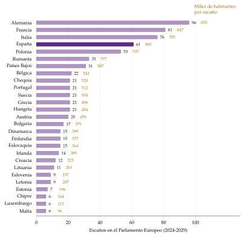
Fuente: elaboración propia a partir de la Decisión (UE) 2023/2061 del Consejo Europeo y de las cifras de población de 2026 de la Decisión 2025/2427 del Consejo.
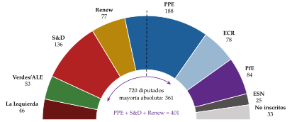
Fuente: elaboración propia a partir del Parlamento Europeo (sesión constitutiva del 16 de julio de 2024). Izq.: La Izquierda; S&D: Socialistas y Demócratas; Renew: Renovar Europa; PPE: Partido Popular Europeo; ECR: Conservadores y Reformistas Europeos; PfE: Patriotas por Europa; ESN: Europa de las Naciones Soberanas.
Organización: el trabajo se hace en unas 20 comisiones parlamentarias especializadas (la de Comercio Internacional, INTA, es la que más interesa a un técnico comercial), donde un ponente prepara el informe que luego vota el pleno; la Conferencia de Presidentes (la presidenta y los presidentes de los grupos) fija el orden del día. Los diputados de cada comisión negocian después con el Consejo en los trílogos (II.3.1).
Funciones:
Legislativa: colegisla con el Consejo en el procedimiento ordinario; da su aprobación en los especiales que la exigen (adhesiones, acuerdos internacionales, marco financiero plurianual) y su opinión en la consulta. Su poder ha crecido con cada tratado, de lo consultivo a la codecisión.
Presupuestaria: aprueba con el Consejo el presupuesto anual y aprueba la gestión de la Comisión (descargo) [ver tema 3.B.37].
De control: elige al presidente de la Comisión y aprueba el Colegio; puede aprobar una moción de censura contra la Comisión por mayoría de dos tercios de los votos emitidos que sea a la vez mayoría de sus miembros (nunca ha prosperado; en 1999 la Comisión Santer dimitió antes de votarse); hace preguntas, crea comisiones de investigación, recibe peticiones y elige al Defensor del Pueblo Europeo.
III.3. El Consejo de la Unión Europea
Qué es (art. 16 TUE): la institución que representa a los gobiernos de los Estados. Lo forma un representante de cada Estado de rango ministerial, facultado para comprometer a su gobierno; tiene su sede en Bruselas (algunas reuniones, en Luxemburgo).
Formaciones: el Consejo es uno, pero se reúne en 10 formaciones según el tema. Destacan la de Asuntos Generales, que prepara el Consejo Europeo; la de Asuntos Exteriores, que preside la Alta Representante, y la de Asuntos Económicos y Financieros (Ecofin). Los ministros de la zona del euro se reúnen antes en el Eurogrupo, que es informal (III.8).
La presidencia rota cada 6 meses entre los Estados, en tríos con un programa común de 18 meses:
2025-2026: Polonia, Dinamarca y Chipre (enero-junio de 2026);
julio de 2026-diciembre de 2027: Irlanda (julio-diciembre de 2026), Lituania y Grecia;
2028-2029: Italia, Letonia y Luxemburgo. España presidió el Consejo en el segundo semestre de 2023.
La preparación: el Comité de Representantes Permanentes (Coreper) reúne a los embajadores de los Estados ante la Unión (Coreper II) y a sus adjuntos (Coreper I), y prepara todas las decisiones del Consejo con unos 150 grupos de trabajo; lo que llega acordado se aprueba sin debate (puntos «A»).16
Funciones: legisla con el Parlamento y aprueba el presupuesto con él; coordina las políticas económicas (Ecofin) [ver tema 3.B.45]; define y aplica la PESC con las orientaciones del Consejo Europeo; y celebra los acuerdos internacionales que negocia la Comisión.
Reglas de voto:
Mayoría cualificada (art. 16.4 TUE), la regla general desde el 1 de noviembre de 2014, con doble mayoría: al menos el 55 % de los Estados (15 de 27) que representen al menos el 65 % de la población. Si la propuesta no viene de la Comisión ni de la Alta Representante, hace falta el 72 % de los Estados (20). La minoría de bloqueo necesita al menos 4 Estados: así, 3 grandes que juntos superan el 35 % de la población no bloquean solos. Las cifras de población se actualizan cada año (para 2026, el umbral es de 293,9 millones de 452,2).
Unanimidad (la abstención no la impide): PESC, fiscalidad, recursos propios y marco financiero, adhesiones, ciudadanía, seguridad social y protección social, cláusula de flexibilidad y parte de la justicia penal.
Mayoría simple (14 Estados): cuestiones de procedimiento.
Una red de seguridad para las minorías: el mecanismo de Ioannina, recogido en una decisión del Consejo de 2009 (Declaración 7 aneja a Lisboa), obliga a seguir negociando «en un plazo razonable» si se oponen Estados que, sin llegar a la minoría de bloqueo, reúnen al menos el 55 % de la población o del número de Estados necesarios para formarla (el 75 % hasta marzo de 2017). No es un veto, sino una obligación de buscar un acuerdo más amplio.
En la práctica, el consenso: aunque en torno al 80 % de la legislación se decide por mayoría cualificada, la mayoría de los actos se adoptan sin votos en contra: la presidencia busca el consenso y la amenaza de la votación basta para que los reticentes cedan (Hayes-Renshaw, Van Aken y Wallace, 2006). Las votaciones sobre actos legislativos son públicas desde Lisboa.
El peso no es el poder: lo que da poder a un Estado en el Consejo no es su porcentaje de población, sino la frecuencia con que su voto es decisivo para formar una mayoría, que miden los índices de la teoría de juegos cooperativos de Shapley y Shubik (1954) y de Banzhaf (1965). Medido así, la doble mayoría da a los grandes algo menos poder que población (Alemania, con el 18,5 % de los habitantes, tiene en torno al 17,5 % del poder; España, con el 10,9 %, en torno al 9,4 %) y a los pequeños varias veces más (Malta, con el 0,13 %, cerca del 0,9 %), y ha hecho al Consejo mucho más ágil que las reglas de Niza. Por eso España y Polonia, que perdían poder relativo, retrasaron la doble mayoría hasta 2014. El modelo y el cálculo para los 27 van en el anexo C.
III.4. El Consejo Europeo
Qué es (art. 15 TUE): la institución que da a la Unión el impulso político y fija sus orientaciones y prioridades. No legisla. Nació como cumbres informales (desde 1961), se institucionalizó en 1974, entró en los Tratados con el Acta Única y es institución desde Lisboa.
Composición: los jefes de Estado o de Gobierno de los 27, su presidente y la presidenta de la Comisión; participa la Alta Representante. Se reúne al menos 2 veces por semestre en Bruselas y decide por consenso, salvo que los Tratados digan otra cosa.
Su presidente lo elige el propio Consejo Europeo por mayoría cualificada para 2 años y medio, renovable una vez, y no puede ejercer un mandato nacional. Desde el 1 de diciembre de 2024 es António Costa, hasta el 31 de mayo de 2027.
Funciones:
orientaciones políticas y agenda estratégica, y el desbloqueo de los grandes asuntos (el acuerdo político sobre el marco financiero plurianual, las grandes respuestas a las crisis);
acción exterior: fija los intereses y objetivos estratégicos y la PESC;
gobernanza económica: respalda las orientaciones del Semestre Europeo [ver tema 3.B.45];
decisiones institucionales: la composición del Parlamento, la rotación de las presidencias, las cláusulas pasarela o la sanción del art. 7;
nombramientos: su presidente, el candidato a presidir la Comisión, el Colegio, la Alta Representante y el Comité Ejecutivo del BCE.
Su peso ha crecido con las crisis: las respuestas a la del euro, la pandemia o la guerra de Ucrania (I.6.3) se decidieron en sus reuniones, a menudo en cumbres extraordinarias. Su programa para 2024-2029 es la Agenda Estratégica de junio de 2024, con 3 prioridades: una Europa libre y democrática, una Europa fuerte y segura, y una Europa próspera y competitiva. El riesgo de ese protagonismo es que lo intergubernamental desplace al método comunitario.
III.5. El Tribunal de Justicia de la Unión Europea
Qué es (art. 19 TUE): la institución que garantiza el respeto del Derecho en la interpretación y aplicación de los Tratados. Tiene su sede en Luxemburgo y nació con la CECA (1952).
Composición: 2 órganos.
El Tribunal de Justicia: 27 jueces (uno por Estado) y 11 abogados generales, que proponen soluciones a los asuntos. Juzga en salas de 3 o 5 jueces, en Gran Sala de 15 o en Pleno.
El Tribunal General (antes, de Primera Instancia, creado en 1988): 54 jueces (2 por Estado desde 2019). Juzga en primera instancia los recursos de particulares y empresas (competencia, ayudas, marcas) y, desde octubre de 2024, las cuestiones prejudiciales de 6 ámbitos técnicos (IVA, impuestos especiales, aduanas, clasificación arancelaria, derechos de los pasajeros y comercio de derechos de emisión).17
Los miembros los nombran los gobiernos de común acuerdo, tras el dictamen de un comité de expertos (art. 255 TFUE), por 6 años renovables.
Funciones (las principales vías):
cuestión prejudicial (art. 267 TFUE): el juez nacional pregunta cómo se interpreta una norma de la Unión o si es válida; la respuesta le vincula. Es la vía de la mayoría de las grandes sentencias y la que garantiza una aplicación uniforme. Los jueces de última instancia están obligados a preguntar, salvo que la respuesta sea evidente o ya la haya dado el Tribunal (doctrina del acto claro, sentencia CILFIT, 1982), y solo el Tribunal de Justicia puede declarar inválido un acto de la Unión (Foto-Frost, 1987);
recurso por incumplimiento (arts. 258-260): contra un Estado, con posibles multas;
recursos de anulación (art. 263) y por omisión (art. 265): control de la legalidad de los actos de las instituciones, como un tribunal constitucional;
responsabilidad extracontractual de la Unión (art. 340) y dictámenes sobre la compatibilidad de los acuerdos internacionales con los Tratados (art. 218.11).
III.6. El Tribunal de Cuentas
Qué es (art. 285 TFUE): el auditor externo de las finanzas de la Unión. Lo creó el Tratado de Bruselas de 1975, funciona desde 1977 en Luxemburgo y es institución desde Maastricht. No es un tribunal: no juzga ni sanciona.
Composición: un miembro por Estado, que nombra el Consejo previa consulta al Parlamento, por 6 años renovables; eligen a su presidente para 3 años.
Funciones:
examina la legalidad y regularidad de los ingresos y gastos y la buena gestión financiera;
publica el informe anual sobre el ejercicio anterior, con la declaración de fiabilidad de las cuentas, que el Parlamento usa para aprobar el descargo de la Comisión, e informes especiales;
si detecta fraude, lo comunica a la Oficina Europea de Lucha contra el Fraude (OLAF) o a la Fiscalía Europea [ver tema 3.B.37].
III.7. El Banco Central Europeo
Qué es (arts. 282-284 TFUE): el banco central de la zona del euro, con sede en Fráncfort. Lo creó Maastricht, funciona desde junio de 1998 y es institución desde Lisboa. Con los bancos centrales nacionales de los 27 forma el Sistema Europeo de Bancos Centrales, y con los de la zona del euro, el Eurosistema. Es independiente: no puede pedir ni recibir instrucciones.
Objetivo: la estabilidad de precios (concretada en una inflación del 2 % a medio plazo, simétrica, según su estrategia de 2021, confirmada en 2025) y, sin perjuicio de ella, apoyar las políticas económicas generales de la Unión.
Órganos:
el Comité Ejecutivo: presidenta (Christine Lagarde, que dejará el cargo el 7 de febrero de 2027), vicepresidente (Boris Vujčić desde el 1 de junio de 2026, tras Luis de Guindos) y 4 miembros, con mandatos de 8 años no renovables que nombra el Consejo Europeo;
el Consejo de Gobierno: el Comité Ejecutivo y los 21 gobernadores de la zona del euro (Bulgaria entró el 1 de enero de 2026), que votan por rotación; decide la política monetaria;
el Consejo General: presidenta, vicepresidente y los 27 gobernadores, para la relación con los países de fuera del euro.
Desde 2014 supervisa además los grandes bancos de la zona del euro (Mecanismo Único de Supervisión). El detalle de sus objetivos, órganos e instrumentos es materia de otros temas [ver tema 3.B.43] [ver tema 3.B.44].
III.8. Otros órganos y organismos
Órganos consultivos (arts. 300-307 TFUE), que emiten dictámenes obligatorios en los casos que fijan los Tratados y otros por iniciativa propia:
el Comité Económico y Social Europeo (CESE, 1958): 329 representantes de empresarios, trabajadores y otras organizaciones de la sociedad civil (21 de España);
el Comité de las Regiones (CdR, Maastricht): 329 representantes de entes regionales y locales (21 de España). Puede recurrir al Tribunal por vulneración de la subsidiariedad.
El Banco Europeo de Inversiones (BEI; Tratado de Roma, 1958; Luxemburgo): el banco de la Unión, cuyos accionistas son los 27 Estados; financia proyectos de cohesión, clima, innovación y, cada vez más, seguridad y defensa. Lo preside Nadia Calviño desde 2024 [ver tema 3.B.30].
El Defensor del Pueblo Europeo: lo elige el Parlamento para la legislatura e investiga la mala administración de las instituciones.
La Fiscalía Europea (cooperación reforzada; Luxemburgo; actúa desde el 1 de junio de 2021): investiga y lleva a juicio los delitos contra el presupuesto de la Unión (fraude, corrupción, fraude del IVA transfronterizo). Hungría se sumó en julio de 2026 y ya son 25 los Estados participantes (fuera, Dinamarca e Irlanda); desde el 1 de noviembre de 2026 la dirige Andrés Ritter, tras Laura Kövesi.
El Servicio Europeo de Acción Exterior (2011), el servicio diplomático de la Unión bajo la Alta Representante [ver tema 3.B.42].
Las agencias: más de 30 agencias descentralizadas con personalidad jurídica propia, que ejecutan tareas técnicas o de supervisión (la del Medicamento, en Ámsterdam; la Autoridad Bancaria Europea, en París; la de Lucha contra el Blanqueo de Capitales, en Fráncfort desde 2025; Frontex, en Varsovia) y agencias ejecutivas de la Comisión que gestionan programas.
En la zona del euro:
el Eurogrupo: reunión informal de los ministros de Finanzas de la zona del euro (Protocolo 14), con un presidente elegido para 2 años y medio; desde el 12 de diciembre de 2025 es el griego Kyriakos Pierrakakis;
el Mecanismo Europeo de Estabilidad (MEDE, 2012): no es un órgano de la Unión, sino una organización intergubernamental de los Estados del euro, con sede en Luxemburgo, que presta a los que pierden el acceso a los mercados con condicionalidad, con una capacidad de préstamo de 500.000 millones de euros. La reforma de su tratado (2021) no ha entrado en vigor porque Italia no la ha ratificado [ver tema 3.B.45].
3 «consejos» que no hay que confundir.
El Consejo Europeo: los jefes de Estado o de Gobierno de la Unión; da el impulso político (III.4).
El Consejo de la Unión Europea (o Consejo): los ministros de los Estados; legisla con el Parlamento (III.3).
El Consejo de Europa: una organización internacional distinta, de 46 Estados, con sede en Estrasburgo, que protege los derechos humanos con el Convenio Europeo y su Tribunal. La Unión está obligada a adherirse al Convenio (art. 6.2 TUE), pero el Tribunal de Justicia rechazó el primer acuerdo de adhesión en su dictamen 2/13 (2014) y la negociación se reabrió después.
Recapitulación: las instituciones reparten el poder entre 3 legitimidades, la de los ciudadanos (Parlamento), la de los Estados (Consejo y Consejo Europeo) y la del interés común (Comisión, Tribunal de Justicia y BCE). Las reglas de voto del Consejo deciden cuánto pesa cada Estado, y la tendencia de cada reforma ha sido más mayoría y más Parlamento.
Conclusión
Recapitulación: En conclusión, la Unión se construyó como anunció Schuman: por realizaciones concretas. De París a Lisboa, cada tratado convirtió una ambición en una regla, y la Unión pasó de 6 a 27 Estados y del carbón y el acero a una moneda común.
Su Derecho es lo que la distingue de cualquier otra organización: prima sobre el nacional, se aplica directamente y lo garantiza un tribunal propio. La subsidiariedad reparte las competencias con una lógica económica: centralizar donde las externalidades superan a la diversidad de preferencias.
Sus instituciones equilibran a los ciudadanos, a los Estados y al interés común, y sus reglas de voto reparten un poder que no es proporcional al peso.
Relevancia:
Para España, la Unión es el marco de casi toda su política económica: comercial, monetaria, de competencia, agrícola y presupuestaria, y una fuente de fondos y de reformas [ver tema 4.A.30].
Extensiones:
La integración económica en teoría [ver tema 3.B.10] [ver tema 3.B.16]; el presupuesto y el marco financiero [ver tema 3.B.37]; el mercado interior [ver tema 3.B.39]; la política comercial [ver tema 3.B.41]; el euro y su gobernanza [ver tema 3.B.43] [ver tema 3.B.45]; y el federalismo fiscal [ver tema 4.B.14].
Opinión:
La ampliación hacia el Este y los Balcanes es la gran decisión de esta década. Hacerla con las reglas actuales arriesga la parálisis; esperar a una reforma de los Tratados arriesga no hacerla nunca. Lo realista es lo que se ha empezado a hacer en 2026: usar las pasarelas y la cooperación reforzada, ligar la entrada a salvaguardias de los valores y dejar para más adelante la reforma completa.
Idea final:
Volvamos al refrán: del dicho al hecho hay mucho trecho. La historia de la Unión es la de ese trecho recorrido a base de Derecho: cada tratado convirtió un dicho en un hecho jurídico. Sus reglas le han servido para crecer de 6 a 27; para llegar a más de 30, el trecho que queda es, otra vez, el de convertir en reglas lo que ya se ha prometido.
A. Anexo: los Estados miembros
| Estado | Adhesión | Euro | Schengen | Escaños | Población (%) |
|---|---|---|---|---|---|
| Alemania | 1952 | 1999 | Sí | 96 | 18,47 |
| Francia | 1952 | 1999 | Sí | 81 | 15,18 |
| Italia | 1952 | 1999 | Sí | 76 | 13,19 |
| España | 1986 | 1999 | Sí | 61 | 10,86 |
| Polonia | 2004 | — | Sí | 53 | 8,29 |
| Rumanía | 2007 | — | Sí (2025) | 33 | 4,21 |
| Países Bajos | 1952 | 1999 | Sí | 31 | 4,02 |
| Bélgica | 1952 | 1999 | Sí | 22 | 2,63 |
| Chequia | 2004 | — | Sí | 21 | 2,42 |
| Portugal | 1986 | 1999 | Sí | 21 | 2,38 |
| Suecia | 1995 | — | Sí | 21 | 2,34 |
| Grecia | 1981 | 2001 | Sí | 21 | 2,30 |
| Hungría | 2004 | — | Sí | 21 | 2,11 |
| Austria | 1995 | 1999 | Sí | 20 | 2,03 |
| Bulgaria | 2007 | 2026 | Sí (2025) | 17 | 1,42 |
| Dinamarca | 1973 | — | Sí | 15 | 1,32 |
| Finlandia | 1995 | 1999 | Sí | 15 | 1,24 |
| Eslovaquia | 2004 | 2009 | Sí | 15 | 1,21 |
| Irlanda | 1973 | 1999 | No | 14 | 1,20 |
| Croacia | 2013 | 2023 | Sí (2023) | 12 | 0,86 |
| Lituania | 2004 | 2015 | Sí | 11 | 0,64 |
| Eslovenia | 2004 | 2007 | Sí | 9 | 0,47 |
| Letonia | 2004 | 2014 | Sí | 9 | 0,41 |
| Estonia | 2004 | 2011 | Sí | 7 | 0,30 |
| Chipre | 2004 | 2008 | No | 6 | 0,22 |
| Luxemburgo | 1952 | 1999 | Sí | 6 | 0,15 |
| Malta | 2004 | 2008 | Sí | 6 | 0,13 |
Fuente: elaboración propia a partir de la Unión Europea, la Decisión 2023/2061 del Consejo Europeo y la Decisión 2025/2427 del Consejo. Adhesión de los fundadores: CECA (1952). Bulgaria y Rumanía, en Schengen desde el 1 de enero de 2025 (por aire y mar desde el 31 de marzo de 2024).
B. Anexo: ¿qué nivel de gobierno? La asignación de competencias
Este anexo desarrolla la lógica económica de la subsidiariedad que el cuerpo del tema da solo de palabra (II.2.2).
a) Idea
La subsidiariedad es una versión jurídica de una vieja pregunta del federalismo fiscal: ¿qué nivel de gobierno debe ofrecer cada bien público? [ver tema 4.B.14]
Oates (1972) dio la respuesta de referencia, el teorema de la descentralización: si las preferencias difieren entre territorios y el bien no desborda sus fronteras, es mejor que lo ofrezca cada territorio a su medida. Alesina, Angeloni y Etro (2005) y Tabellini (2003) lo llevaron a la Unión: centralizar tiene un beneficio, internalizar las externalidades entre Estados (y aprovechar las economías de escala), y un coste, imponer a todos la misma política aunque sus preferencias difieran.
b) Modelo
i) Supuestos
2 Estados, \(i=1,2\), y un bien público \(G_i\) que se ofrece en cada uno (seguridad, investigación, protección del medio ambiente).
Preferencias distintas: el beneficio marginal del bien en el Estado \(i\) es \(\mathit{BMg}_i(G_i)=a_i-G_i\), con \(a_2>a_1\); llamamos \(\Delta=a_2-a_1\) a la heterogeneidad y \(\bar a=(a_1+a_2)/2\) a la media.
Coste marginal constante \(c\), igual para los 2 Estados y para la Unión.
Externalidad: cada unidad de \(G_i\) da un beneficio \(e\geq0\) al otro Estado (la contaminación que no cruza la frontera, la defensa común).
2 regímenes:
descentralización: cada Estado elige su \(G_i\) mirando solo su bienestar;
centralización: la Unión elige una misma cantidad \(G\) para los 2 Estados, la que maximiza el bienestar conjunto. La uniformidad es el supuesto clave: refleja que una política común difícilmente se adapta a cada Estado.
ii) Desarrollo
Paso 1: el óptimo social (la referencia). El bienestar conjunto es \(W=\sum_i\big[(a_i+e-c)\,G_i-\tfrac12G_i^2\big]\), y su óptimo:
\(G_i^{s}=a_i-c+e\): cada Estado a su medida y contando el beneficio que da al otro.
Paso 2: la descentralización. Cada Estado iguala su beneficio marginal al coste, \(a_i-G_i=c\):
\(G_i^{D}=a_i-c\): se adapta a las preferencias, pero se queda corto en \(e\) porque ignora la externalidad;
como el bienestar es cuadrático, la pérdida de cada Estado es \(\tfrac12e^2\), y la total, \(L^{D}=e^2\).
Paso 3: la centralización. La Unión maximiza \(W\) con \(G_1=G_2=G\), \(\bar a+e-c-G=0\):
\(G^{C}=\bar a-c+e\): internaliza la externalidad, pero da a los 2 Estados la cantidad pensada para la media;
cada Estado se aparta de su óptimo en \(\Delta/2\) (uno recibe de más y otro de menos), y la pérdida total es \(L^{C}=2\cdot\tfrac12\big(\tfrac{\Delta}{2}\big)^2=\tfrac{\Delta^2}{4}\) (gráfico 5).
Paso 4: la regla de asignación. Conviene centralizar si \(L^{C}<L^{D}\):
\[\text{centralizar en la Unión}\iff e>\frac{\Delta}{2}\tag{1}\]
es decir, si la externalidad entre Estados supera la mitad de la diferencia de sus preferencias.
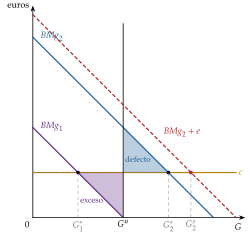
Fuente: elaboración propia a partir de Oates (1972), con el ejemplo del texto (\(a_1=4\), \(a_2=8\), \(c=2\)). Sin externalidad, la provisión uniforme \(G^u\) da de más al Estado 1 y de menos al Estado 2: los triángulos son la pérdida. Con externalidad \(e\), el óptimo del Estado 2 sube a \(G_2^s\).
iii) Implicaciones
El teorema de Oates es el caso \(e=0\): entonces \(L^{D}=0<L^{C}\), y descentralizar es siempre mejor si las preferencias difieren.
La subsidiariedad del art. 5 TUE tiene la misma lógica: «la dimensión o los efectos» de la acción son las economías de escala y las externalidades; el coste de centralizar es la heterogeneidad de los 27.
Las competencias exclusivas encajan: la política comercial y la unión aduanera (un arancel distinto por Estado rompería el mercado único), la competencia o la moneda tienen externalidades muy grandes y preferencias relativamente parecidas (gráfico 6).
Cuantos más Estados, más heterogeneidad: cada ampliación sube \(\Delta\), lo que justifica una Unión que centralice menos ámbitos o deje más flexibilidad (cooperación reforzada).
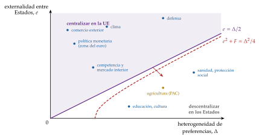
Fuente: elaboración propia a partir del modelo del texto y de Alesina, Angeloni y Schuknecht (2005). La posición de cada política es orientativa. Con un ahorro fijo \(F\) al centralizar, la frontera baja: centralizar si \(e^2+F>\Delta^2/4\).
c) Extensiones
Economías de escala: si centralizar ahorra un coste fijo \(F\) (no duplicar ejércitos, agencias o redes), centralizar compensa si \(e^2+F>\Delta^2/4\), una frontera más baja.
El tamaño de la unión: Alesina y Spolaore (2003) y Alesina, Angeloni y Etro (2005) hacen endógeno el número de miembros y las competencias: una unión más grande internaliza más, pero es más heterogénea; si decide por mayoría, tiende a centralizar demasiado los ámbitos que interesan al votante mediano.
La movilidad: si los ciudadanos «votan con los pies» entre jurisdicciones (Tiebout, 1956), la descentralización revela y satisface mejor las preferencias; en la Unión, la movilidad es baja.
La segunda generación del federalismo: los gobiernos no son benevolentes ni están bien informados; la descentralización acerca la decisión a quien conoce el problema, pero puede crear restricciones presupuestarias blandas [ver tema 4.B.14].
d) Evidencia empírica
Alesina, Angeloni y Schuknecht (2005) midieron la actividad de la Unión por ámbitos entre 1971 y 2000: creció sobre todo donde la teoría lo justifica (comercio, mercado interior, competencia, medio ambiente), pero también en ámbitos de preferencias muy distintas y pocas externalidades (la agricultura y buena parte del gasto regional), y poco en otros donde las externalidades son grandes (defensa, política exterior).
Las encuestas del Eurobarómetro muestran el mismo desajuste: los ciudadanos piden más Europa en defensa, migraciones, energía o clima, justo donde hay más externalidades.
Las 3 tarjetas amarillas de los Parlamentos nacionales, y que ninguna haya ido más allá, muestran que el control político de la subsidiariedad es débil.
e) Valoración
El modelo da un criterio claro y medible para la subsidiariedad y explica la lista de competencias exclusivas.
Pero la asignación real responde también a la historia y a la economía política: la PAC se centralizó por un pacto entre Francia y Alemania, no por sus externalidades; y la defensa sigue siendo nacional por soberanía, aunque el modelo pida centralizarla.
Además, el modelo supone que la Unión decide como un planificador. En la realidad decide con unas reglas e instituciones concretas, y esas reglas reparten el poder entre los Estados: es lo que estudian el bloque III y el anexo C.
C. Anexo: ¿cuánto poder tiene cada Estado? Los índices de poder de voto
Este anexo desarrolla lo que el cuerpo del tema resume al tratar las reglas de voto del Consejo (III.3).
a) Idea
Con la doble mayoría, ¿pesa Alemania lo que dice su población (18,5 %)? ¿Y Malta (0,13 %)? El peso de un Estado no es su poder: lo que importa es con qué frecuencia su voto decide el resultado. Un Estado con mucho peso puede no decidir nunca, y uno pequeño puede ser decisivo a menudo.
La teoría de juegos cooperativos mide ese poder [ver tema 3.A.14]. Shapley y Shubik (1954) aplicaron el valor de Shapley18 a las votaciones, y Banzhaf (1965) (antes, Penrose (1946)) propuso una medida parecida. Son los índices con los que se negociaron las reglas de voto de Niza y Lisboa [ver tema 3.A.24] [ver tema 4.B.2].
b) Modelo
i) Supuestos
Votantes: los \(n=27\) Estados, \(N=\{1,\ldots,27\}\), que votan sí o no a una propuesta.
Regla de decisión: una coalición \(T\subseteq N\) gana, \(v(T)=1\), si reúne al menos 15 Estados con al menos el 65 % de la población, o al menos 24 Estados (porque la minoría de bloqueo exige 4); si no, \(v(T)=0\). Es un juego simple: monótono (si \(T\) gana, cualquier coalición que la contenga gana).
Poder a priori: no se tienen en cuenta las preferencias de los Estados; se supone que cualquier orden de llegada a la coalición (Shapley-Shubik) o cualquier coalición (Banzhaf) es igual de probable. Se mide el poder que da la regla, no la política.
ii) Desarrollo
Paso 1: el voto decisivo. Un Estado \(i\) es decisivo (o pivote) en una coalición \(T\) que no lo incluye si \(T\) pierde sin él y gana con él: \(v(T\cup\{i\})-v(T)=1\).
Paso 2: el índice de Shapley-Shubik. Los Estados se suman a la coalición en un orden aleatorio; el poder de \(i\) es la probabilidad de que sea él quien la convierta en ganadora:
\[\phi_i(v)=\sum_{T\subseteq N\setminus\{i\}}\frac{|T|!\,\big(n-|T|-1\big)!}{n!}\,\Big[v\big(T\cup\{i\}\big)-v(T)\Big]\tag{2}\]
Los índices de todos los Estados suman 1.
Paso 3: el índice de Banzhaf. Todas las coaliciones son igual de probables: el poder absoluto de \(i\) es la proporción de coaliciones de los demás en las que es decisivo, \(\beta_i'=\frac{1}{2^{n-1}}\sum_{T\subseteq N\setminus\{i\}}\big[v(T\cup\{i\})-v(T)\big]\), y el normalizado, \(\beta_i=\beta_i'/\sum_j\beta_j'\).
Paso 4: el cálculo para los 27, con las cifras de población de 2026 (hay \(2^{26}\approx67\) millones de coaliciones por Estado; el método, en el apartado f):
Alemania: población del 18,5 %, Shapley-Shubik del 17,5 % y Banzhaf del 12,0 %;
España: 10,9, 9,4 y 7,8 %; Polonia: 8,3, 6,7 y 6,3 %;
Malta: 0,13, 0,87 y 1,73 % (gráfico 7).
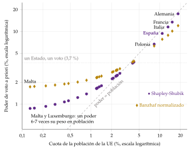
Fuente: elaboración propia con la regla de la doble mayoría (arts. 16.4 TUE y 238.3 TFUE) y las cifras de población de 2026 de la Decisión 2025/2427 del Consejo. Por encima de la bisectriz, los Estados con más poder que población.
iii) Implicaciones
La doble mayoría combina 2 legitimidades: el criterio de Estados (un Estado, un voto) favorece a los pequeños y el de población, a los grandes. El resultado da a los grandes algo menos poder que población y a los pequeños varias veces más.
Los 2 índices no coinciden: Banzhaf da más poder relativo a los pequeños que Shapley-Shubik, y las conclusiones sobre quién gana o pierde con una reforma dependen del índice.
La capacidad de decidir: la probabilidad de que una coalición al azar sea ganadora (el poder de la colectividad para actuar, de Coleman) es del 13,2 % con las reglas actuales, frente a cerca del 2 % con las de Niza en una Unión de 27: la doble mayoría hizo al Consejo mucho más ágil.
España: con Niza tenía casi los votos de Alemania (27 frente a 29) con la mitad de población; con la doble mayoría perdió poder relativo frente a Alemania, aunque ganó capacidad de decidir el conjunto.
c) Extensiones
La ley de la raíz cuadrada de Penrose (1946): para que cada ciudadano tenga el mismo poder indirecto, el peso de cada Estado debe ser proporcional a la raíz cuadrada de su población. Polonia defendió en 2007 un sistema así (el «compromiso de Jagellón», con un umbral del 61,6 %).
El poder a posteriori: si las preferencias de los Estados están correlacionadas (por ejemplo, frugales frente a meridionales), las coaliciones no son aleatorias, y el poder efectivo depende de quién está cerca del centro del espacio político y de quién fija la agenda (la Comisión).
La ampliación: cada nuevo Estado diluye el poder de los demás y cambia el equilibrio entre grandes y pequeños; la entrada de un Estado grande como Ucrania desplazaría a los actuales.
d) Evidencia empírica
El Consejo vota poco: aunque en torno al 80 % de la legislación se decide por mayoría cualificada, la mayoría de los actos se adoptan sin votos en contra, porque la presidencia busca el consenso y la amenaza de la votación basta para que los reticentes cedan (Hayes-Renshaw, Van Aken y Wallace, 2006).
Pero el poder a priori importa en la negociación: las negociaciones de Niza (2000) y de la Constitución (2003-2004) giraron en torno a estos índices, y España y Polonia, que eran los que más perdían, bloquearon la doble mayoría hasta que se aplazó a 2014.
e) Valoración
Los índices son útiles para diseñar reglas, como tras un velo de ignorancia, y muestran que repartir votos en proporción a la población no reparte el poder en esa proporción.
Ignoran las preferencias, la agenda y el Parlamento como colegislador, y suponen que se vota cuando casi siempre se pacta. El poder real en la Unión está también en las instituciones que no representan a los Estados.
f) Apéndice: cómo se calculan los índices
El problema: con 27 Estados hay \(2^{26}\approx6{,}7\cdot10^{7}\) coaliciones de los demás para cada Estado; contarlas una a una es posible, pero lento. Se puede hacer exacto con programación dinámica, porque la regla solo depende de 2 números de la coalición: cuántos Estados tiene (\(k\)) y cuánta población (\(p\)).
Paso 1: para cada Estado \(i\), se cuenta cuántas coaliciones de los demás hay con cada par \((k,p)\), \(C_i(k,p)\), añadiendo los Estados de uno en uno: al añadir el Estado \(j\), de población \(w_j\), \(C(k,p)\leftarrow C(k,p)+C(k-1,p-w_j)\).
Paso 2: \(i\) es decisivo en las coaliciones \((k,p)\) que pierden sin él y ganan con él; con la regla \(v=1\iff(k\geq15\ \text{y}\ p\geq0{,}65\,P)\ \text{o}\ k\geq24\), son las que cumplen
\(k+1\geq15\) y \(p+w_i\geq0{,}65\,P\), pero no \(k\geq15\) y \(p\geq0{,}65\,P\); o bien
\(k=23\) (con él llegan a 24 Estados).
Paso 3: el índice de Banzhaf suma las coaliciones decisivas y las divide por \(2^{26}\); el de Shapley-Shubik las pondera por \(k!\,(26-k)!/27!\), la probabilidad de que en un orden aleatorio lleguen antes que \(i\) justo esos \(k\) Estados.
Resultado (población en miles, para que el cálculo sea manejable; tabla 6). La probabilidad de que una coalición al azar gane es del 13,2 %.∎
| Estado | Pob. | SS | Bz | Estado | Pob. | SS | Bz |
|---|---|---|---|---|---|---|---|
| Alemania | 18,47 | 17,54 | 12,03 | Austria | 2,03 | 2,23 | 2,75 |
| Francia | 15,18 | 13,48 | 10,12 | Bulgaria | 1,42 | 1,79 | 2,43 |
| Italia | 13,19 | 11,53 | 8,87 | Dinamarca | 1,32 | 1,73 | 2,38 |
| España | 10,86 | 9,39 | 7,81 | Finlandia | 1,24 | 1,67 | 2,34 |
| Polonia | 8,29 | 6,69 | 6,32 | Eslovaquia | 1,21 | 1,64 | 2,32 |
| Rumanía | 4,21 | 3,79 | 3,90 | Irlanda | 1,20 | 1,64 | 2,31 |
| Países Bajos | 4,02 | 3,66 | 3,80 | Croacia | 0,86 | 1,38 | 2,13 |
| Bélgica | 2,63 | 2,65 | 3,07 | Lituania | 0,64 | 1,23 | 2,01 |
| Chequia | 2,42 | 2,50 | 2,96 | Eslovenia | 0,47 | 1,11 | 1,92 |
| Portugal | 2,38 | 2,47 | 2,94 | Letonia | 0,41 | 1,07 | 1,89 |
| Suecia | 2,34 | 2,45 | 2,92 | Estonia | 0,30 | 0,99 | 1,83 |
| Grecia | 2,30 | 2,42 | 2,90 | Chipre | 0,22 | 0,93 | 1,78 |
| Hungría | 2,11 | 2,28 | 2,80 | Luxemburgo | 0,15 | 0,88 | 1,75 |
| Malta | 0,13 | 0,87 | 1,73 |
Fuente: elaboración propia con las cifras de población de 2026. SS: Shapley-Shubik; Bz: Banzhaf normalizado.
D. Anexo: preguntas de test
Preguntas tipo test del primer ejercicio: simulador de test.
Bibliografía
Fuentes esenciales
Otras referencias
Su nombre oficial era European Recovery Program (Programa de Recuperación Europea). Repartió unos 13.000 millones de dólares entre 1948 y 1952 en 16 países de Europa occidental; los del Este, bajo control soviético, renunciaron a él.↩︎
La OECE se transformó en 1961 en la Organización para la Cooperación y el Desarrollo Económicos (OCDE) [ver tema 3.B.19].↩︎
El Consejo de Europa es una organización internacional distinta de la UE, con sede en Estrasburgo y 46 Estados; su obra principal es el Convenio Europeo de Derechos Humanos (1950), que aplica el Tribunal Europeo de Derechos Humanos. No hay que confundirlo con el Consejo Europeo ni con el Consejo de la UE, que son instituciones de la Unión (III.8).↩︎
No hay que confundirlo con Robert Schumann, el compositor alemán del siglo XIX.↩︎
Francia temía la recuperación de la industria pesada alemana, base de la industria militar. Ponerla en común hacía «materialmente imposible» una nueva guerra entre los dos países.↩︎
En 1960 fundó con Suecia, Noruega, Dinamarca, Austria, Suiza y Portugal la Asociación Europea de Libre Comercio (AELC; EFTA en inglés); Islandia entró en 1970 y Liechtenstein en 1991 [ver tema 3.B.35].↩︎
El Tratado añadió una cláusula de flexibilidad (art. 235 CEE, hoy art. 352 TFUE): la Comunidad podía actuar, por unanimidad, para lograr un objetivo del Tratado aunque este no le diera los poderes necesarios. Con ella entraron, desde 1972, la política regional, la de medio ambiente o la industrial, antes de que los Tratados las recogieran.↩︎
Es la base jurídica de la «Europa a varias velocidades», que ya existía de hecho con el euro y con Schengen: no todos los Estados avanzan al mismo ritmo ni en los mismos ámbitos.↩︎
La Carta reúne en 6 capítulos (dignidad, libertades, igualdad, solidaridad, ciudadanía y justicia) los derechos civiles, políticos, económicos y sociales. Obliga a las instituciones y a los Estados cuando aplican el Derecho de la Unión. Polonia obtuvo un protocolo que limita su invocación ante sus tribunales (el Reino Unido lo tenía también).↩︎
La primacía no figura en los Tratados: la recoge la Declaración 17 aneja al Tratado de Lisboa, que remite a la jurisprudencia. Solo opera en el ámbito de las competencias de la Unión.↩︎
En algunos casos la iniciativa la tienen otros:
un cuarto de los Estados, en cooperación judicial penal y policial;
el BCE, sobre su Estatuto;
el Tribunal de Justicia, para crear tribunales especializados.
Los tratados fundacionales tenían 4 instituciones (Comisión, Consejo, Asamblea y Tribunal de Justicia). Maastricht añadió el Tribunal de Cuentas, y Lisboa, el Consejo Europeo y el BCE.↩︎
En el edificio Berlaymont. Su antecedente es la Alta Autoridad de la CECA (1952); las Comisiones de la CEE y de Euratom (1958) se fusionaron en 1967.↩︎
Lisboa preveía reducirla a dos tercios del número de Estados desde 2014, pero el Consejo Europeo, usando la facultad del art. 17.5 TUE, mantuvo un comisario por Estado (lo había prometido a Irlanda para su segundo referéndum).↩︎
Desde 2024, los cambios de grupo han movido las cifras: en julio de 2026, el PPE tenía 184 escaños, los Socialistas y Demócratas 135, Patriotas por Europa 85, los Conservadores y Reformistas 84 y Renovar Europa 78.↩︎
En la Representación Permanente de España ante la UE trabajan muchos técnicos comerciales y economistas del Estado.↩︎
El Tribunal de la Función Pública, creado en 2004, se suprimió en 2016 y sus asuntos pasaron al Tribunal General.↩︎
Lloyd Shapley recibió el Premio Nobel de Economía en 2012, con Alvin Roth, «por la teoría de las asignaciones estables y la práctica del diseño de mercados».↩︎